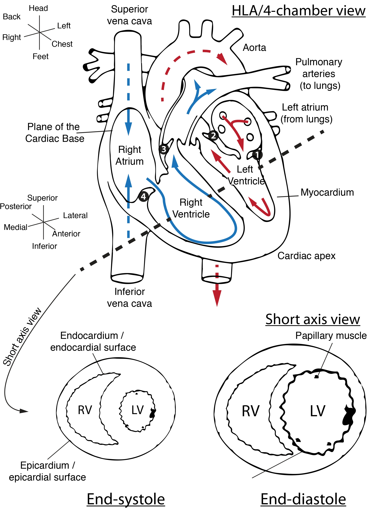
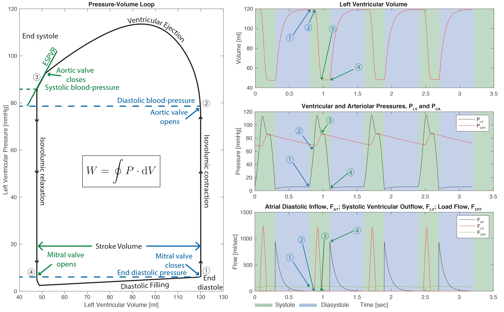
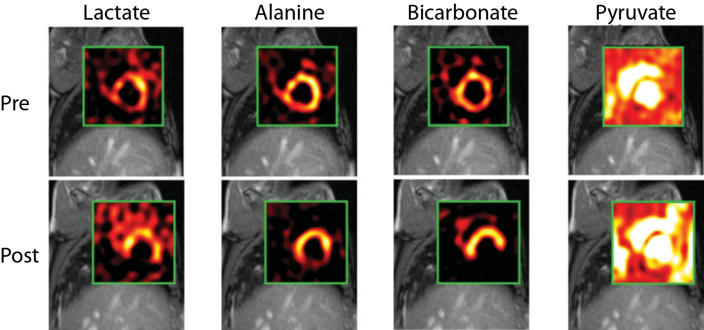
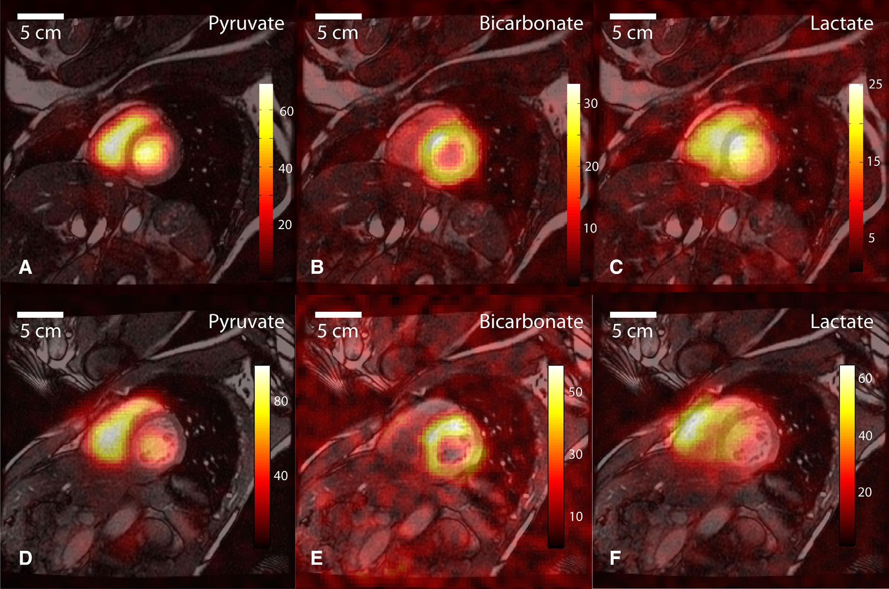
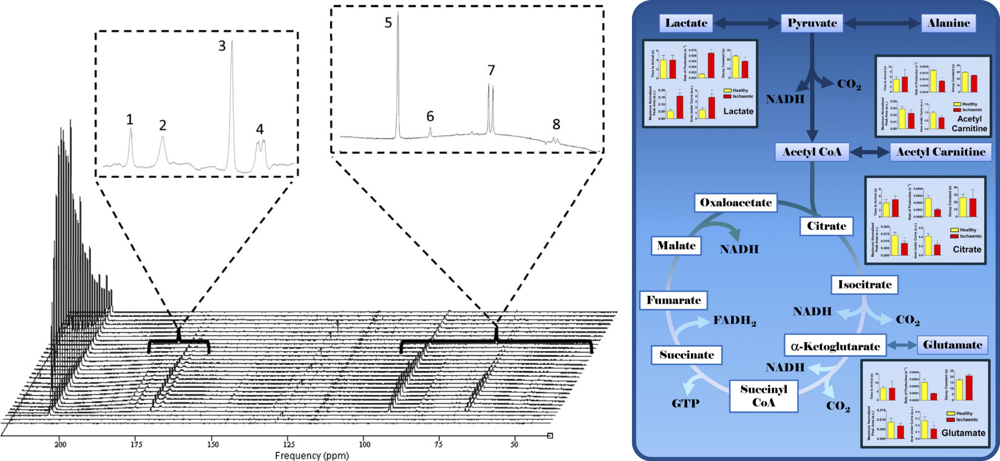
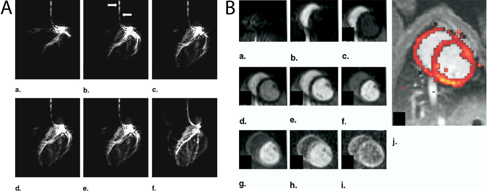
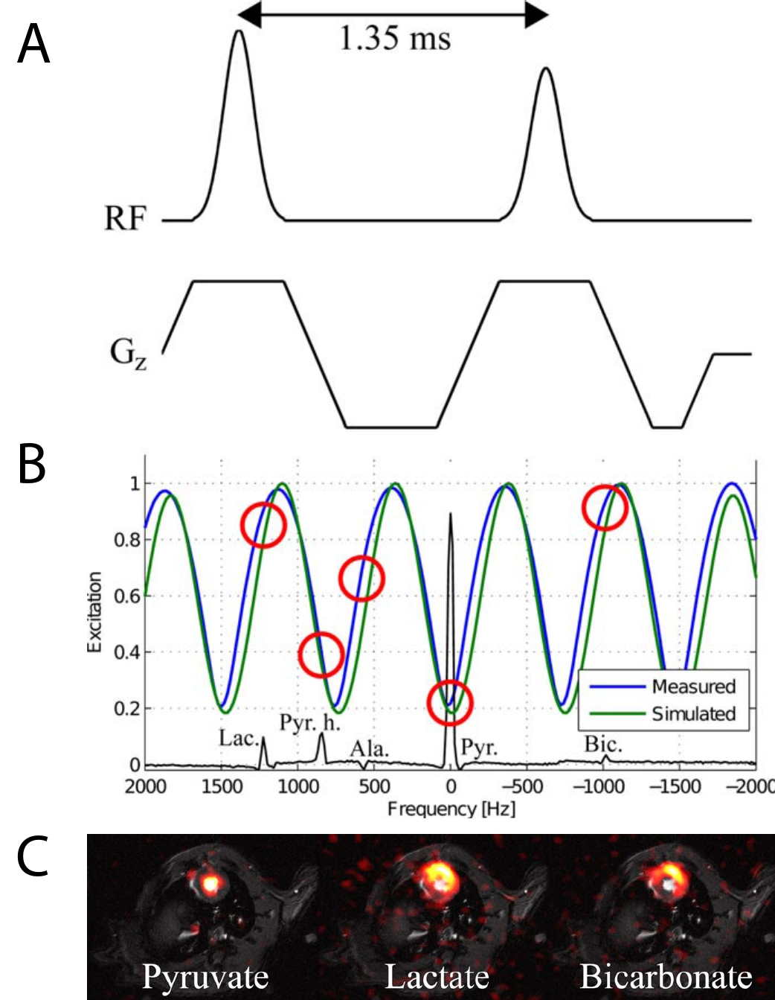
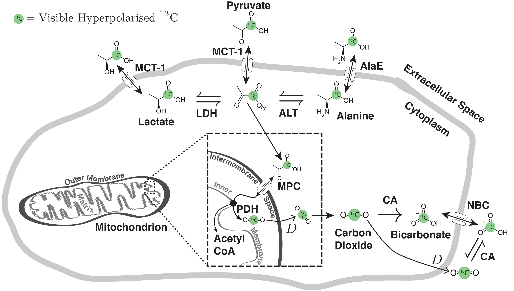
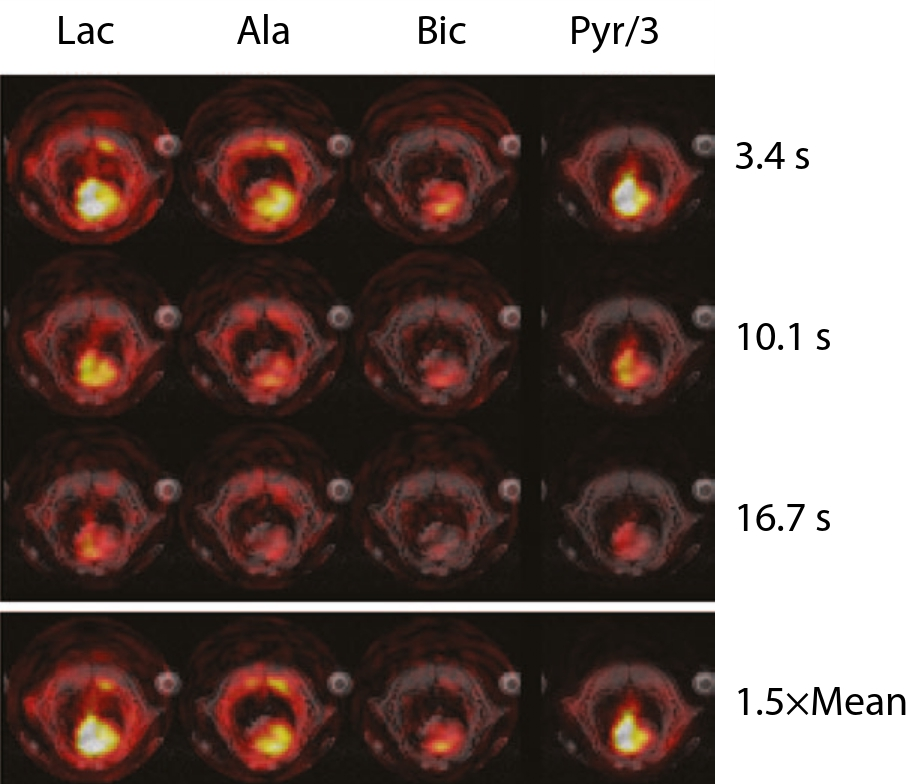
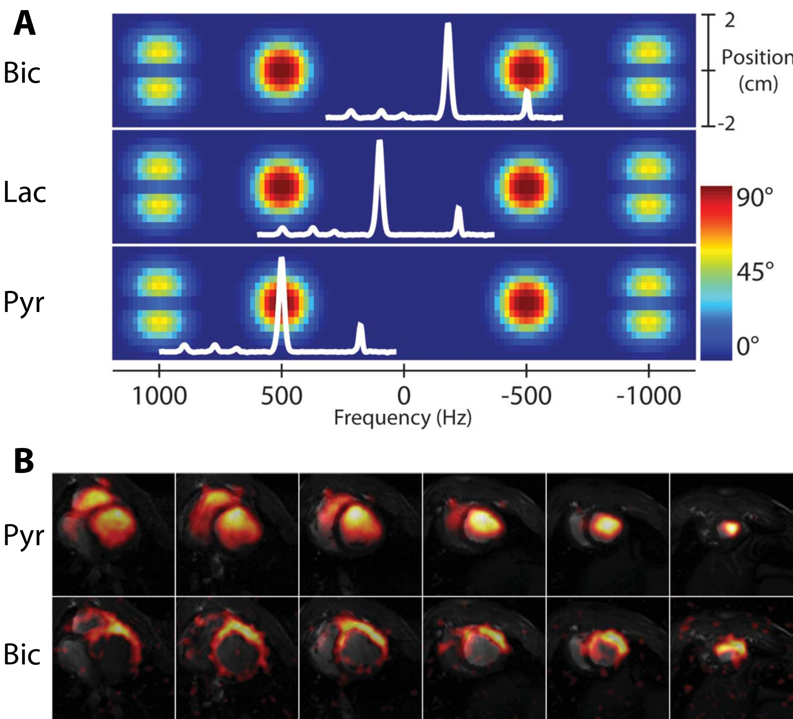

Hyperpolarized MR in Cardiology#
Jack J. Miller1,2,3,4, Justin Lau2,3,5, Damian Tyler2,3
1 The MR Research Centre & The PET Research Centre, Department of Clinical Medicine, Aarhus University, Aarhus, Denmark
2 Oxford Centre for Clinical Magnetic Resonance Research (OCMR), Division of Cardiovascular Medicine, Radcliffe Department of Medicine, University of Oxford, Oxfordshire, United Kingdom
3 Department of Physiology, Anatomy and Genetics, University of Oxford, Oxfordshire, United Kingdom
4 Department of Physics, Clarendon Laboratory, University of Oxford, Oxfordshire, United Kingdom
5 Small Animal Imaging Lab Core, H. Lee Moffitt Cancer Center, Tampa, Florida, United States
Abstract#
The heart is a truly remarkable organ. It begins beating from before we are born and continues to circulate blood around our bodies for our entire lives. Its demands for energy, therefore, are large and highly variable. To meet these variable demands, the mammalian heart has evolved considerable metabolic flexibility to best utilise the molecular fuel sources available to it. In many cardiac diseases, this metabolic flexibility is lost, and the energetic status of the heart becomes significantly impaired. A better understanding of this metabolic dysregulation can accelerate scientific development towards the prevention and treatment of heart disease. Hyperpolarized MR is uniquely poised to enable the study of a subset of the metabolic pathways in the heart, offering invaluable insight into its energetic status. This chapter reviews both the basic biology and biochemistry underpinning the heart as a contracting engine, and the technical challenges that it poses to the physicist trying to design hyperpolarized imaging experiments. This is then followed by a discussion of some of the more successful imaging techniques and the new-found insights into biochemical processes, in both health and disease, that they have provided. Finally, as a novel (and comparatively expensive) imaging technology, hyperpolarized MR has to fit into a framework of other techniques and the value it can bring to the clinical diagnosis and management of disease is discussed.
Keywords: Metabolic imaging, Cardiac Imaging, Cardiac MRI, CMR, Myocardial Perfusion, Cardiac Energetics, Cardiac metabolism, Hyperpolarized C-13, Medical physics, Medical imaging
Fuelling the pump: metabolism and the healthy heart#
The heart is a pump: it beats non-stop from before you are born to the day that you die. In order to achieve this, it cycles through the greatest amount, per gram, of adenosine triphosphate (ATP) of any organ in the body. This ATP is necessary to provide the Gibbs free energy for both hydraulic work and the basal metabolic needs of the cardiomyocyte. This huge demand for energy has to be met. In health, cardiac workload is exquisitely matched to energetic demands, however, in disease, any shortfall leads first to an alteration in behaviour (such as the capacity to exercise), before progressing to the onset of the clinical symptoms of heart failure, ultimately leading to death. To enable this constant energy production in the setting of periodic feeding and fasting, the heart can consume all of the major groups of metabolic fuels (i.e., carbohydrates, fats and ketone bodies) in order to produce the required ATP. Accordingly, the heart is often regarded as a “metabolic omnivore”. In addition, several detailed energy buffer systems exist in order to continually regenerate ATP to power contraction in the case of any imbalance between ATP supply and demand. Of these, the most MR-visible, and arguably the most important, is the phosphocreatine buffer system, which works through the enzyme, creatine kinase, to generate ATP rapidly during acute periods of need. Whilst the key role of metabolism in heart disease has been recognised for nearly a century [@Taegtmeyer2016a], the recent introduction of hyperpolarized MR permits the direct real-time determination of several metabolic reactions that are of key importance in the heart, in both health and disease.

Fig. 1 The basic anatomy of the heart (not shown are the pulmonary, aortic, mitral and tricuspid valves). The dotted line indicates the standard short-axis view of the heart, with the other illustration roughly corresponding to the four-chamber or horizontal long-axis (HLA) view of the heart. Note that these axes are typically double-oblique in MR acquisitions and moreover are variable between different subjects. The two coordinate systems shown roughly corresponds to that of the patient, and of the surfaces of the organ; valves numbered 1-4 are the mitral, aortic, pulmonary and tricuspid respectively. Red and blue arrows denote the flow of oxygenated and deoxygenated blood. Note that the left ventricular myocardium – the heart muscle – is significantly thicker, but smaller, during end-systole as opposed to end-diastole. Figure CC-BY-SA J. Miller#
Whilst a complete primer on cardiology is beyond the scope of this text, it is important to appreciate several salient points of cardiac function and gross anatomy (illustrated in Fig. 1): for the MR physicist, the heart is a challenging organ to study, as it contains both oxygenated and deoxygenated blood (each possessing a distinct magnetic susceptibility and relaxation properties) in close proximity to each other, and moves over time. As a pump, the heart undergoes a pressure-volume loop independently in each of its four chambers. When the left ventricle contracts, defining a period of time known as systole, oxygenated blood is pumped through the left-ventricular outflow tract and aortic valve into the aorta in order to supply oxygenated blood to the systemic circulation (including the heart itself, as the coronary arteries branch from the aorta at the level of the aortic valve). In health, the left ventricle is physically the largest, and owing to its key role in keeping the rest of the body oxygenated, could perhaps be informally considered as being the most medically important. After passing through the body, deoxygenated blood drains into the lower-pressure right atrium during its period of relaxation known as atrial diastole. The atrium then contracts, forcing blood through through the tricuspid valve into the right ventricle, which, in health is physically smaller and thinner-walled than the left ventricle. During the subsequent right-ventricular systole, deoxygenated blood is pumped through the pulmonary valve and the pulmonary arteries to the lungs, where it is oxygenated, before draining into the lower pressure left atrium in its period of diastole. The left atrium contracts, forcing blood through the mitral valve into the left ventricle in its period of diastole, often just called “diastole” – and the process repeats.
Cardiac 1H MRI, known colloquially as “CMR”, remains the gold-standard for imaging the hydraulic function and anatomy of the heart. This is because of the unique contrast-to-noise ratio of the technique, its lack of ionising radiation and its ability to image the heart over many cardiac cycles. The main anatomical axes of the heart are the long axis – running from its top, or basal, surface, to its pointy apex; and the short axis, running left to right and perpendicular to the long axis. Several (potentially confusing) anatomical terms of location additionally are in common parlance for the newcomer to the field: the heart muscle, the myocardium, has an “outside” or epicardial surface, opening onto the pericardial sac that encompasses the heart, and an “inside” (endocardial) surface that forms the lumen, which contains blood.
As shown in Fig. 2, if one looks at the left ventricle alone, this cardiac cycle corresponds to a closed pressure-volume loop whose integral is the hydraulic work that the heart has to do. This work is intimately tied to the overall metabolic demands of the heart: roughly speaking, this can be thought of as a basal metabolic power requirement, plus some function of hydraulic work per cardiac cycle, typically with an efficiency of around 20% [@Gibbs2001]. This PV loop, therefore, provides the ultimate “answer” as to the energetic status of the heart as a pump: it is often invasively measured via the use of balloon catheters in the context of in-patient hospital procedures. Of particular note for their relation to pathologies are the diastolic and systolic blood pressures, the stroke volume of the heart (i.e. how much blood it pumps per beat in absolute terms), often “normalized” by the diastolic volume of the heart to form the ejection fraction (of how much blood is pumped per cycle), both of which can yield the cardiac output in units of ml minute−1. Many complaints in cardiology essentially boil down to the insufficiency of the heart to sustain the cardiac output required to give the body the oxygenated blood that, at some given activity level, it demands.

Fig. 2 The left ventricular pressure volume loop (left) and pressure, volume, and blood flow as a function of time (right). The cardiac cycle proceeds from end-diastole in the numerical order shown, and of particular note are the systolic and diastolic blood pressure, the left ventricular stroke volume, and the end-systolic pressuree volume relationship (ESPVR), which is an approximately linear part of the empirically determined graph that, all other things being equal, provides an effective index of myocardial contractility. The total hydraulic work per cycle is the integral of the curve. The interested physicist-cum-physiologist may like to know that empirical PV loops can be effectively modeled through the use of electrical circuit (i.e., LCR) analoguesdwhich is how this graph was generated, using parameters derived for a healthy adult male [@Bicker1992].#
The fundamental hypothesis behind the utility of hyperpolarized MR is thus that it is possible to either spectrally determine, or regionally image, metabolic alterations that have occurred in the heart, and hence infer either altered physiology or disease.
Fats burn in the fire of carbohydrates: \(\beta\)-oxidation and glycolysis#
The healthy heart generates ~95% of its ATP via oxidative phosphorylation in the mitochondria via the tricarboxylic acid (TCA) cycle and oxidative phosphorylation in the electron transport chain. This ATP generation is predominately (70-90%) fuelled by the \(\beta\)-oxidation of fatty acids, with the remainder coming from glucose (via glycolysis), lactate, ketone bodies and amino acids.
The relative utilization of these different fuels is regulated by the Randle cycle such that the healthy heart can modulate its fuel choice based on supply and demand. This ensures constant ATP production regardless of the type of fuel provided by the blood stream. However, there always needs to be a balance between the oxidation of fats and carbohydrates leading to the adage that “fats burn in the fire of carbohydrates”. This need arises out of the desire to maintain the flux of carbon around the TCA cycle, whose central role is the oxidation of acetyl-CoA to CO2 with the concomitant production of NADH and FADH2 for the electron transport chain. Whilst in principle the TCA cycle recycles 100% of its intermediates, in practice this number is somewhat lower because many of the intermediates are also substrates for other metabolic pathways. This mismatch creates a need for a continued “anaplerotic” flux of carbon towards the TCA cycle itself. Whilst burning fats alone through the \(\beta\)-oxidation of medium or long-chain fatty acids produces acetyl-CoA moeities, without pyruvate being produced from glycolysis the continually required metabolite, oxaloacetate, can become depleted, and hence unable to combine with acetyl-CoA to form citrate, stalling the TCA cycle. It is for these reasons that, under some conditions, flux through the enzyme pyruvate carboxylase can become significant, anaplerotically regenerating oxaloacetate from pyruvate (whilst consuming ATP) as opposed to producing acetyl-CoA and CO2 (and NADH).
Glycolysis#
Glycolysis describes the process by which glucose is metabolised in the cytosol of the cell to generate pyruvate and relatively small amounts of ATP. Glucose is taken up into cardiomyocytes via the glucose transporters, GLUT1 and GLUT4. GLUT1 offers a basal level of glucose uptake, whilst GLUT4, which is stored in intracellular vesicles and incorporated into the plasma membrane in response to insulin, providing the ability to increase glucose uptake and oxidation under high blood glucose conditions. Glycolysis can be considered to consist of three key stages, an initial energy investment stage, where two ATP molecules are used to “activate” the glucose molecule through phosphorylation, a cleavage stage, where the six carbons from glucose are split into two 3-carbon molecules, and then finally the energy harvesting stage, where four ATP molecules are generated by substrate level phosphorylation, along with the production of two pyruvate molecules and two molecules of reduced nicotinamide adenine dinucleotide (NADH). Overall, this means that glycolysis generates the net production of 2 ATP molecules, 2 NADH molecules (which can be passed on to the electron transport chain for further ATP generation – see below) and 2 pyruvate molecules.
The fate of the pyruvate and NADH generated in the glycolytic pathway depends on the prevailing metabolic conditions within the cell. In low oxygen conditions, the pyruvate is reduced into lactate by the enzyme lactate dehydrogenase, with the concomitant regeneration of NAD+ from the NADH. This allows the continuous production of limited amounts of ATP in anaerobic conditions (especially important during periods of ischaemia in the heart) as the regenerated NAD+ allows for continued flux through glycolysis. However, the lactate produced contributes to an acid load on the heart that will eventually limit contractile function if not removed. Conversely, under normal aerobic conditions, the majority of pyruvate generated from glycolysis is taken up into the mitochondria where it is oxidatively decarboxylated by the pyruvate dehydrogenase (PDH) complex. This generates acetyl-CoA, which feeds into the TCA cycle, NADH, which is passed on to the electron transport chain, and carbon dioxide (CO\(_2\)), which is rapidly equilibrated with bicarbonate (HCO\(_3^-\)) under the action of carbonic anhydrase. As well as conversion to lactate and decarboxylation into CO\(_2\), pyruvate can also be transaminated into the amino acid, alanine, or carboxylated into oxaloacetate as one of the ‘anaplerotic’ pathways used to replenish the limited metabolite levels of the TCA cycle.
Not all glucose taken up into cardiomyocytes is destined to pass through the full length of the glycolytic pathway. Branches from the main pathway are responsible for glucose storage, in the form of glycogen, and the generation of multiple biosynthetic precursors, including NADPH and ribose sugars, via the pentose phosphate pathway.
\(\beta\)-oxidation#
Fatty acids produce more ATP per mole than glucose, but, due to their highly reduced structure, require more oxygen for complete oxidation in the mitochondria compared to glucose. Free fatty acid (FFA) levels in the blood are increased during periods of fasting, during stress and under pathological conditions such as diabetes.
FFAs enter cardiomyocytes through fatty acid transporters in the plasma membrane or via a ‘flip-flop’ mechanism. Fatty acids are then “activated” with the addition of coenzyme A (CoA) (requiring the consumption of ATP) generating fatty acyl-CoA. This fatty acyl-CoA is then transported across the impermeable inner mitochondrial membrane via the carnitine shuttle. This involves the replacement of the CoA moiety with the zwitterionic alcohol, carnitine, using carnitine palmitoyl transferase 1 (CPT1), transfer across the inner mitochondrial membrane by carnitine acylcarnitine translocase, and then regeneration of the fatty acyl-CoA molecule by carnitine palmitoyl transferase 2 (CPT2).
Once in the mitochondrial matrix, the fatty acyl-CoA subsequently undergoes sequential rounds of the \(\beta\)-oxidation pathway, wherein a molecule of acetyl-CoA, two reduced co-factors in the form of NADH and flavin adenine dinucleotide (FADH\(_2\)) and a fatty acyl-CoA two carbons shorter than the starting molecule are generated. The acetyl-CoA passes on into the TCA cycle and the NADH / FADH\(_2\) are used in the electron transport chain for the subsequent generation of ATP. As well as requiring more oxygen (per ATP molecule generated), it is also important to note that fatty acid oxidation is a purely aerobic process and, unlike glycolysis, cannot proceed in the absence of oxygen.
Oxidative phosphorylation#
The TCA cycle#
The acetyl-CoA derived from both pyruvate and fatty acid oxidation (as well as from the metabolism of ketone bodies and some amino acids) enters the tricarboxylic acid (TCA) cycle, where it is combined with oxaloacetate to generate the 6-carbon molecule, citrate. The subsequent cyclic series of reactions proceeds, generating further reduced co-factors (3 molecules of NADH and 1 molecule of FADH\(_2\)), which are passed to the electron transport chain, along with two molecules of carbon dioxide and a single molecule of ATP. The process finishes with the regeneration of the original molecule of oxaloacetate, so that the cycle can start over again.
The electron transport chain#
The reduced co-factors (NADH and FADH\(_2\)) generated in glycolysis, PDH, \(\beta\)-oxidation and the TCA cycle donate electrons into the electron transport chain where they are passed through a series of protein complexes until they are accepted by molecular oxygen in the generation of H\(_2\)O. This process allows for the pumping of protons from the mitochondrial matrix into the inter-membrane space, forming a proton-motive force made up of both a ‘chemical’ proton concentration gradient and an ‘electrical’ potential difference across the inner mitochondrial membrane. This proton-motive force is subsequently dissipated via the flow of protons back into the mitochondrial matrix through the adenosine triphospate (ATP) synthase complex, simultaneously generating ATP from adenosine diphosphate (ADP) and inorganic phosphate (Pi). This process generates significantly more ATP than the 2 molecules that are provided anaerobically in glycolysis, with ~31 ATP molecules being produced from the complete oxidation of glucose and ~106 ATP molecules from the complete oxidation of the 16-carbon fatty acid, palmitate.
Following synthesis, ATP is transported out of the mitochondria (in exchange for ADP) where it is subsequently converted into the high-energy phospho-transfer molecule, phosphocreatine (PCr) using the enzyme, creatine kinase. PCr can subsequently diffuse in the cytosol to sites of ATP utilization (e.g., the myofibrils) where ATP is regenerated, by different isoforms of creatine kinase, ready for use.
The physiological regulation of metabolism#
To enable the continuous contractile function of the heart, especially in the face of variable demands in terms of cardiac output and in the presence of an ever-changing fuel supply, metabolism in the heart must be sufficiently flexible to constantly match energetic ‘supply’ with ‘demand’. To achieve this, cardiac metabolism is tightly regulated at multiple points by allosteric, covalent and transcriptional mechanisms. At the level of glycolysis and \(\beta\)-oxidation, regulation predominates around the selection of the most appropriate (and abundant) fuel, with that regulation providing reciprocal mechanisms to inhibit fatty acid oxidation when glucose oxidation is high and inversely inhibit glucose oxidation when fatty acid oxidation is increased. At the level of the TCA cycle and oxidative phosphorylation, regulation is driven by ATP demand and oxygen availability. This is mediated by the limited availability of NAD+ and FADH, such that when flux through the electron transport chain is reduced (either because of a lack of oxygen as the terminal electron acceptor or due to a lack of ADP for conversion to ATP), NADH and FADH\(_2\) cannot be regenerated into NAD+ and FADH, which prevents the key dehydrogenase reactions of the TCA cycle from proceeding. Alterations in this delicate balance of metabolic “supply and demand” are a key feature of many cardiovascular diseases (as detailed in the following section) and form the basis for the increasing interest in using hyperpolarized MRI methods to probe cardiac metabolism in vivo.
Metabolic alterations in disease#
Heart failure#
The failing heart, defined by clinical symptoms, is unable to supply the body with sufficient oxygenated blood to permit function with unaltered physiology [@Dorland2011]. Reflecting a disease defined by symptoms and therefore potentially arising from multiple origins, heart failure (HF) has several distinct ætiologies that broadly have in common either direct myocardial injury, or an increase in the required myocardial workload. These causes can be abrupt and sudden – such as myocardial infarction or trauma to the valves of the heart – or gradual and progressive, such as increasing systemic demands on the heart over a long period of time. HF is additionally an end-point of many diseases and disorders, ranging from the genetic (e.g. hypertrophic cardiomyopathy) to the parasitic (for example, the trypanosomiasis caused by the protozoan Trypanosoma cruzi, known as Chagas disease, is strongly associated with heart failure 10-30 years after infection [@WHO2014]). With a median survival time of five years, and limited options for clinical management, the prognosis for HF is poor [@McMurray2005].
It is generally accepted that myocardial metabolism is altered in HF, although exactly how remains somewhat contentious [@Neubauer2007]. In the early stages of the disease, there is considered to be a shift towards increased glycolysis and glucose oxidation with a reduction in the \(\beta\)-oxidation of fatty acids. As the disease progresses, oxidation of both fatty acids and glucose becomes reduced, together with maladapted mitochondrial morphology, function and biogenesis, and an increase in anaplerotic reactions that channel carbon back towards the TCA cycle. These alterations are concomitant with a decrease in ATP availability in the failing heart, but the causal link between metabolic alteration and HF remains as something of a “chicken-and-egg” problem [@Doenst2013].
Metabolic therapies for heart failure#
Many pharmacological treatments for HF have been proposed, and some successes and failures point towards the underlying mechanistic detail of the disease. As the classical canonical feature of the failing heart with reduced ejection fraction is an impairment in its contractile function, the traditional management of the disease consisted of pro-contractile (positively inotropic) drugs such as dobutamine that would increase the force of cardiac muscle contraction and, it was believed, increase ejection fraction to improve symptoms. However, these drugs increase the required myocardial hydraulic work and therefore energy usage in the failing heart. Whilst successfully utilised in the short-term, to acutely improve ejection fraction when it begins to be incompatible with life, it is now known that they effectively worsen long-term cardiac performance if used chronically [@OCONNOR199978].
Current chronic HF treatments, in contrast, can be broadly said to focus on reducing the load on the cardiovascular system, either by surgically increasing the diameter of compromised blood vessels or by mechanically unloading the left ventricle of the heart. In addition, pharmacological treatments such as ACE inhibitors [@TheConsensusTrialStudyGroup1987; @Pfeffer1992] or angiotensin II blockers [@doi:10.1056/NEJMoa010713; @Pfeffer2003] act to effectively reduce the energetic demands on the heart, and are therefore energy-sparing, and may counter-intuitively improve the prognosis of HF by decreasing the required myocardial contractility. The efficacy of these compounds in current clinical use motivates the development of novel pharmacoactive agents to directly target myocardial metabolism, and additionally hints at a causal link between metabolism and HF.
The myocardial consumption of fatty acids is relatively oxygen inefficient, requiring more oxygen per mole of ATP generated than glucose oxidation. As a consequence, under circumstances of reduced oxygen availability, metabolism shifts towards glucose utilization, producing less ATP in total but requiring proportionately less oxygen. As the leading causes (in the United States) of HF are believed to be vascular disease and myocardial infarction, some reduction in oxygen availability is at least transiently likely [@McMurray2005; @Gheorghiade1998]. Several partial inhibitors of fatty acid oxidation (“pFOX inhibitors”) have been developed and show promise in ameliorating HF (see [@Wolff2002] for a review). For example, the agents etomoxir, oxfenicine and perhexiline are carnitine palmitoyl transferase 1 inhibitors, and therefore block mitochondrial fatty acid uptake and subsequent oxidation directly [@Kennedy2000]. Unfortunately, etomoxir failed phase-II clinical trials due to excessive toxicity [@Holubarsch2007]; but clinical trials of oxfenicine and perhexiline are ongoing [@Birmingham2011; @Lee2005; @Singh2014]. As others have commented, the successful management of HF by decreasing fatty acid utilisation is counter-intuitive, as end-stage HF is associated with a profound decrease in fatty acid oxidation [@Ashrafian2007]. It therefore remains the case that imaging the ultimate metabolic fate of substrates consumed is therefore highly desirable in cardiology.
Ischæmic heart disease#
Ischæmia is defined as the pathological reduction of blood flow to tissue, and is a condition in which metabolism is profoundly altered as the tissue adapts to its new, more challenging environment [@Macpherson2002]. In the heart, myocardial ischæmia commonly originates from an occlusion in the coronary arteries, and the resulting hypoxic state rapidly causes a switch towards anaerobic glycolysis to maintain ATP synthesis – that is, the heart uses a fuel source that requires less oxygen in order to keep the organism alive [@Cross1995]. This shift is associated with a subsequent increase in the rate of glycogen breakdown [@Cross1996] leading to increased production of lactate, ultimately leading to acidosis and a decrease in myocyte contractility. In practice, most patients undergoing some form of myocardial ischæmic event do so because of a blocked blood vessel somewhere in the coronary arterial tree, and experience a “wavefront” of injury, with the hypoxic region starting in the endocardium and progressing towards the epicardium (i.e. from the interior, ventricular surface of the heart out) [@Stanley2004; @Reimer1977].
The functional response of the myocardium to ischæmia is complex, and depends on the length and severity of the ischæmic event – severity in terms of both the reduction in absolute blood flow, and the physical extent of the heart affected. Prior to cell death due to prolonged ischæmia, the myocardium is often described as “stunned”, referring to a lack of contractility that can be restored with the return of normal blood flow; or ‘hibernating’, referring to akinetic tissue with impaired contractile function during ischæmia that may slowly return to normal over a longer period of time [@DiCarli2000; @HEUSCH1998]. Both are potentially salvageable following interventional reperfusion: that is, the surgical intervention to open blocked blood vessels.
If the ischæmic insult is sufficiently large, i.e. the degree, duration and location of occlusion is severe, necrotic cell death ensues, resulting in a myocardial infarction (MI, commonly known as a “heart attack”), which is a common cause of subsequent heart failure [@Dargie2005]. It is currently difficult to distinguish between viable, hibernating myocardium and tissue that is dead; accordingly, most patients believed to have acute MI are the subject of interventional revascularisation therapies that attempt to reperfuse and rescue the ischæmic myocardium. Interventional reperfusion remains the front-line treatment for acute MI, and it is effective: reperfusion following acute MI is associated with lower rates of early and late death following the MI, and fewer hospital readmissions for subsequent ischæmia or HF [@Zijlstra1999; @Montalescot2004].
However, it is also well known that reperfusion following ischæmia triggers an acute set of metabolic and inflammatory responses. These responses are evolutionarily believed to try to minimise the probability of cardiac rupture and increase the short-term probability of survival of an individual, and it is hypothesised that they evolved where the most likely context of the ischæmic insult was traumatic, in young (and physically fit) individuals [@Frangogiannis2002]. It is essentially the same set of inflammatory responses that ordinarily lead to wound healing and scar formation following an injury elsewhere in the body. However, in the infarcted myocardium the influx of macrophages, neutrophils and lymphocytes into the tissue can be disadvantageous in the longer term following an initial protective phase that is associated directly with scar formation. Dysregulated inflammatory responses or metabolic changes that lead to further injury are termed “reperfusion injuries”, and have been shown in pre-clinical models of disease to worsen outcome in the longer term [@Dobaczewski2010; @Huebener2008]. In humans, protracted inflammation following MI is strongly correlated with adverse outcome and reduced survival [@DeLemos2007], yet attempts at improving patient outcomes through the use of anti-inflammatory drugs have not been successful [@Roberts1976; @Faxon2002; @Armstrong2007]. Specifically, the use of corticosteroids are associated with an increased probability of cardiac rupture [@Ichihara2002] and clinical reports from the mid-1980s show an increased prevalence of death by left ventricular rupture following MI in steroid patients [@Silverman1987a]. As a consequence, many studies aiming to modulate the immune system for the therapy of MI failed as a result of issues of impaired healing or increased risk of cardiac rupture and hence death [@Seropian2014].
Therefore, there exists a need to be able to resolve this “reperfusion conflict”, and understand in which circumstances the immune response of the heart is deleterious. The metabolic signature of inflammation – i.e., increased regional glycolysis arising from an increased density of highly glycolytic activated immune cells – suggests that metabolic imaging approaches might provide an approach to probe the response of the heart to injury. These inflammatory changes following MI result in tissue that is metabolically distinct from the normal myocardium; the generation of an immune response necessitates considerable energy expenditure in order to support protein biosynthesis, and growth and proliferation in T-cells “activated” by the nearby presence of chemical markers of injury. Such activated T-cells increase glucose metabolism resulting in an “aerobic glycolysis” phenotype, a preferential conversion of pyruvate to lactate even when not limited by oxygen availability. The molecular mechanisms behind the switch are distinct from the hypoxia-mediated mechanisms that ordinarily promote glycolysis and the reasons behind this preference for “aerobic glycolysis” are not well understood. However, they are thought to possibly reflect the increased conversion rates and availability of synthesis precursors in activated T-cells [@Fox2005; @Maciver2008; @Florholmen2004].
If the MI is survived, a fibrotic scar forms over a period of weeks that is believed to lessen the probability of cardiac rupture. This scar is non-contractile, and correspondingly decreases the functional performance of the heart by reducing the ejection fraction of the relevant chamber: it physically acts to alter the mechano-biology of the myocardium itself, and drives a profound metabolic alteration in the border surrounding it. It is this change in functional performance that drives the development of HF from MI: the effective workload of the remaining tissue is increased following a decrease in its useful stroke volume. This period of (mal-)adaptation is known as myocardial remodelling, and occurs over a comparatively long timescale following an MI. Increasing cardiac workload is a necessary response to the inability of the damaged heart to adequately perfuse the body following MI, and is achieved by cytokine and neurohormonal signalling, resulting in increased heart rate and increased force of myocardial contraction. Such changes provide short term support by maintaining cardiac output, but ultimately can drive the descent into heart failure following MI [@Chatham2012].
The value of metabolic imaging in cardiac disease#
As outlined in detail above, metabolism is of great interest in cardiac pathology. Changes in the metabolic phenotype could act as a direct measure of the ischæmic tissue during myocardial infarction, and report on metabolic remodelling and HF over greater periods of time as the disease progresses. Such changes are of interest for basic research into the disease, as it is likely that any successful therapy for HF will have a metabolically modulating effect. As metabolic alterations in HF have been known for decades (starting with the observation in 1939 of decreased creatine content in the failing heart by Herrmann and Decherd [@HERRMANN1939]), there is a considerable body of evidence showing the utility for metabolic research into the disease.
Quantifying cardiac metabolism with MR#
Conventional, thermal equilibrium MR: strengths and limitations.#
Clinical cardiac MR (CMR) exams are routinely performed at both 1.5 T and 3 T, and cardiac proton MRI forms the current gold-standard method of cardiac structural and functional imaging. Much information about the function of the heart – i.e. as a pump – can be obtained simply from cardiac cine imaging, i.e., imaging the heart at multiple points over the cardiac cycle. This can reveal abnormalities that may be associated with numerous different pathologies. For example, enlargement of the left ventricular wall is a characteristic of hypertrophic cardiomyopathy that can be observed from anatomical short axis images, and the descent into heart failure is typically associated with an increase in the size of the left ventricular pool that comes from a mechanical effect to compensate in the face of higher pressures in order to maintain cardiac output. Regional defects in cardiac motion are typically observed following MI, and are made obvious in the course of cine imaging as akinetic regions. Typically, a steady-state free precession (SSFP) sequence is often used for CINE imaging due to its efficient sampling of transverse magnetisation; for further details see e.g. [@Kramer2020a].
Alternatively, contrast agents such as chelated gadolinium compounds or, more recently, manganese based agents, can be administered intravenously to alter the cardiac tissue contrast. The temporal dynamics of the tissue contrast can reveal additional information such as perfusion and tissue damage. Injured tissues exhibit slower contrast clearance times and appear bright on late gadolinium enhancement (LGE) images. However, identification of injured tissue by LGE is not sufficient to determine the viability of the injured tissue (c.f. [@Kramer2020a]). Metabolic information would be desirable to assess the state of the injured tissue.
Accordingly, beyond proton imaging there are two main MR techniques that have been used to quantify and probe the metabolic status of the heart: proton spectroscopy, which is able to quantify the concentration of several relevant metabolites; and phosphorus spectroscopy, which almost exclusively is used to probe the high-energy phosphorus containing compounds that are key to life: adenosine triphosphate (ATP), phosphocreatine (PCr) and inorganic phosphate (Pi). All are in principle detectable by phosphorus MRS, but in most instances Pi is spectrally obscured by the overlapping chemical shift of the phosphorus moieties in diphosphoglycerate, found in relatively high concentration within red blood cells. The ratio of PCr to the \(\gamma\)-resonance of ATP in particular has been extensively shown to form a marker of the metabolic state of the heart: with the absolute concentration of ATP maintained until the end stages of disease, phosphocreatine acts as a longer-term “energy buffer” molecule in the heart whose absolute level has been shown to decrease in numerous cardiac pathologies. Furthermore, the direct flux between these major species can also be quantified via saturation-transfer spectroscopy: because all three are in chemical exchange, (i.e. \(\text{PCr}\leftrightharpoons ATP \leftrightharpoons \text{ADP} + \text{Pi}\) ), it is possible to selectively deplete magnetisation in one chemical species (e.g. \(\gamma\)-ATP) and observe the decrease in the exchanging partners (PCr and Pi), yielding the relevant rate constant of chemical exchange between the pools (c.f. [@Spencer1988; @Schar2010; @Miller2021]). Together with the direct estimate of the concentration of the metabolites at hand – itself very challenging owing to coil profile effects, amongst others – this permits the determination of the absolute flux through this limited, but vital, part of the metabolic network. Whilst of proven utility in further quantifying the metabolic state of the heart, the utility of this technique is limited by long acquisition times, inherent because of the low gyromagnetic ratio of the 31P nucleus, and furthermore by the low endogenous concentration of the metabolites in question [@Peterzan2020].
In contrast to 31P MRS, proton MRS can potentially detect a far larger pool of metabolites, i.e. essentially all of them. However, this “feature” comes at a cost: the proton spectrum in vivo is very crowded, with multiple overlapping resonances, and is not helped by both its complexity and the poor spectral linewidths achievable in vivo. Moreover, proton MRS suffers from the same issues as other forms of thermal-equilibrium MRS: namely long acquisition times and comparatively poor spatial resolutions arising out of low concentrations. Accordingly, while there is a strong tradition of estimating the relative proportion of several relevant metabolites – such as creatine, choline, and fats – within a localised voxel in the heart, e.g. via PRESS spectroscopy prospectively gated to the ECG R-wave, it is almost impossible to directly infer metabolic rates. As a consequence, while providing several tantalisingly related pieces of information, it is not possible to directly infer the central metabolic rates that are so key to life within the confines of conventional proton spectroscopy [@Gillinder2015].
Hyperpolarized MR spectroscopy: a successful molecular menagerie of hyperpolarized probes#
Cardiac metabolism was one of the first areas of study following the development of dissolution Dynamic Nuclear Polarisation, as it uniquely promises the ability to quantify several central synthetic rates within the heart that are not easily obtainable in any other form. Undoubtedly the “superstar” molecule of the technique is, as in other areas, hyperpolarized [1-13C]pyruvate, which features both the requisite required long \(T_1\) of the technique, and additionally is biologically active and can provide an indication of the effective rate of glycolysis – through its flux into lactate – and additionally that of the oxidation of glucose, through CO2/bicarbonate production via the pyruvate dehydrogenase complex. Secondary to this, however, several molecules have been shown to be of utility in cardiac imaging, for example, [2-13]pyruvate, fumarate, the ketone bodies acetoacetate and beta-hydroxybutyrate; and additionally metabolically inert molecules – such as urea – as probes of perfusion. See also Chapter 6 for more information on hyperpolarized agents.
Hyperpolarized [1-13C]pyruvate#
The potential promise of hyperpolarization for cardiac metabolic imaging was realised soon after the technique was discovered, with the first “applications” paper – [@Golman2003] – showing aortic perfusion with 13C-urea. This was followed by coronary angiography with a long-lived hyperpolarized tracer, ultimately resulting in a plethora of interest in the technique for metabolic imaging, summarised in [@Golman2006d]. This was followed by [@Merritt2007] showing in the perfused rat heart that the production of visible bicarbonate following hyperpolarized [1-13C]pyruvate injection is obtained exclusively by flux through pyruvate dehydrogenase. Likewise, the in vivo state of PDH regulation in the rat heart was demonstrated by [@Schroeder2008] to be reduced by approximately 74 % following an overnight fast compared to the fed state as detected through hyperpolarized [1-13C]pyruvate spectroscopy. Such changes in activity are consistent with those reported in the literature obtained through traditional (i.e. invasive) biochemical means, and show that the technique could form a rapid, noninvasive probe of in vivo metabolic activity.

Fig. 3 Chemical Shift Imaging (CSI) maps returned following intravenous injection of hyperpolarized [1-13C]pyruvate from a male Swedish domestic pig before and two hours after a 45 min period of coronary artery occlusion. Note that, common to the majority of hyperpolarized cardiac imaging experiments, the hyperpolarized agent – [1-13C]pyruvate– can be seen to be perfusing the ventricles (as it enters the blood stream), with downstream metabolic products subsequently visible in the working myocardium. Here, Golman et al. show that the rate of production of -bicarbonate in particular is almost entirely eliminated in the insulted myocardium, leading to the appearance of a “hole” in an otherwise normal region of bicarbonate production that corresponds to the region of the insult. In this instance, it is apparent that the inferior region of lactate and bicarbonate production is not visible post infarction, whilst alanine is severely attenuated. Figure John Wiley and Sons, adapted and reproduced with permission from [@Golman2008a].#
Concomitantly with this work, [@Golman2008a] demonstrated a striking reduction in the visible rate of PDH flux in the post ischæmic pig myocardium by more than 90 %, when the left circumflex coronary artery was occluded by balloon catheterization for either 15 or 45 minutes, and then revascularized by the deflation of the balloon (c.f. Fig. 3). Subsequent, independent evaluation by a radiologist who was unaware of the occlusion time showed that hyperpolarized [1-13C]pyruvate images could accurately evaluate the state of the post-ischæmic myocardium with greater accuracy compared to that obtained evaluating wall motion abnormalities from CINE images alone. These profound results highlight the key role of metabolism in life, and the unique promise that hyperpolarized metabolic imaging has in being able to non-invasively quantify the key metabolic reactions that underpin the heart’s essential function. It was accordingly proposed that hyperpolarized [1-13C]pyruvate imaging may form a more sensitive and quantitative method for detecting abnormal cardiac behaviour than standard wall motion techniques alone.

Fig. 4 Hyperpolarized metabolic imaging of the healthy human heart following the injection of [1-13C]pyruvate, shown in two consecutive slices (with an \(8.8\times8.8\times 10 \ \text{mm}^3\) resolution) and three different metabolites, with a sequence consisting of a breath-held spiral readout following spectral-spatial RF excitation. Figure The Authors, adapted and reproduced with permission from [@Cunningham2016b].#
After these initial developments, there has been a relative explosion in the number and type of metabolic probes that have been explored with hyperpolarization in the heart, and additionally in the technical sophistication of the sequences used to image them. The development of the SPINlab polarizer has made it possible for sites to use the technique in a sterile way, suitable for injection into patient populations, in a far more readily accessible form than before [@Ardenkjaer-Larsen2011]. Accordingly, several human studies have subsequently been performed on the heart: both cardiac imaging [@Cunningham2016b] and spectroscopy [@Rider2020] have been undertaken following the injection of hyperpolarized [1-13C]pyruvate, with striking results (c.f. Fig. 4), including in the human ischaemic myocardium [@Apps2021]. It is this development that we shall now subsequently examine in depth.
Hyperpolarized [2-13C]pyruvate#
Additional metabolic insights can be gained by isotopically labelling pyruvate at the carbonyl C2 position, which exhibits a relatively long \(T_1\) of 47 s in solution at 3 T [@chung2019first]. Prior to entering the TCA cycle, [2-13C]pyruvate can be converted to [1-13C]acetylcarnitine and [2-13C]lactate. The label of [2-13C]pyruvate enters the TCA cycle as acetyl-CoA. First demonstrated in the perfused rat heart, [2-13C]pyruvate conversion to [1-13C]citrate and [5-13C]glutamate were decreased post-ischæmia [@Schroeder2009b] (c.f. Fig. 5). Glutamate is in rapid exchange with the TCA cycle intermediate \(\alpha\)-ketoglutarate, a key component of the malate-aspartate shuttle. Conversion of [2-13C]pyruvate to [5-13C]glutamate may be indicative of the cellular redox response to disease or physiological demand, for example in a porcine model of dobutamine adrenergic activation [@chen2018probing]. Simultaneous investigations of PDH flux, TCA cycle activity, and pH can be realised with hyperpolarized [2-13C]pyruvate in tandem with [1-13C]pyruvate [@josan2013vivo] or as the dual-labelled [1,2-13C]pyruvate form [@Chen2012b]. The safety profiles of [2-13C]pyruvate and [1,2-13C]pyruvate are identical to that of [1-13C]pyruvate, which has already been used in human studies in numerous jurisdictions, facilitating rapid adoption toward clinical translation.

Fig. 5 Time-resolved spectroscopy following the infusion of hyperpolarized [2-13C]pyruvate into the perfused heart reveals several downstream metabolic products (left) together with a graphic schematic of their ultimate metabolic fate (right). Briefly, these stacked spectra were acquired in the first 60 s following infusion into a perfused rat heart. [2-13C]pyruvate itself is observed at 207.8 ppm. Peaks 1, 2, and 3 represent the metabolic products [5-13C]glutamate (183.7 ppm), [1-13C]citrate (181.0 ppm), and [1-13C]acetylcarnitine (175.2 ppm), respectively. [1-13C]Pyruvate derived from natural abundance 13C can be seen as a quartet at 172.8 ppm (peak 4, left inset). [2-13C]Pyruvate hydrate, which is in chemical equilibrium with pyruvate, was detected at 96.5 ppm (peak 5, right inset). Impurities in the [2-13C]pyruvic acid preparation were observed at w49 and 89 ppm (peak 6, right inset). [2-13C]lactate and [2-13C]alanine were also observed (peaks 7 and 8, respectively). Figure reproduced (adapted) with permission from Schroeder et al http://www.fasebj.org/doi/10.1096/fj.09-129171.#
Hyperpolarized Fatty Acids and Ketone Bodies#
Fatty acid oxidation has likewise been directly investigated by hyperpolarized MR. [@Ball2014] report the production and use of hyperpolarized [1-13C]butyric acid with approximately 7 % polarisation and a \(T_1\) of ~20 sec. Following injection into both the perfused and in vivo rat heart, a large number of TCA cycle intermediates (glutamate, citrate and acetylcarnitine) were observed along with the ketone bodies acetoacetate and \(\beta\)-hydroxybutyrate. As is often the case for probes hyperpolarized via d-DNP, it is additionally possible to hyperpolarize [1-13C]pyruvate and [1-13C]butyrate simultaneously and monitor myocardial substrate selection to a much higher degree of chemical selectivity in vivo. As noted by [@Bastiaansen2015], the co-infusion of hyperpolarized metabolic fuels is a one-of-a-kind method for assessing myocardial substrate preference in vivo. Such metabolic versatility routinely found in the heart is consistent with the canonical description of the heart as a “metabolic omnivore”, able to consume a large number of substrates in order to maintain its continuous contractual demand for energy. [@Bastiaansen2013] have also reported that [1-13C]acetate can also be hyperpolarized (\(P\approx 13\%\) and a \(T_1\) of ~15 sec in blood at 9.4 T) and acts as an effective in vivo probe of acetyl-CoA synthetase activity as production of [1-13C]acetylcarnitine can be observed in vivo in the rat leg. Subsequently, the cardiac metabolism of [1-13C]acetate and quantification of acetyl-CoA synthetase activity in vivo has been demonstrated in the healthy pig myocardium [@Flori2015a].
Extending the utility of d-DNP to longer chain fatty acids, preliminary work by [@Yoshihara2015] has revealed that -octanoate, a medium-chain fatty acid, can be hyperpolarized via d-DNP (to \(P\approx 11 \%\) with a \(T_1\) of ~30 s) and again could be observed undergoing \(\beta\)-oxidation through to [1-13C]acetylcarnitine. A related development is the detection of the ketone bodies acetoacetate and \(\beta\)–hydroxybutyrate directly in the perfused heart, revealing information both about the basic biochemistry of the probes in the fed and fasted states [@Miller2016], but has also been demonstrated to report different central TCA cycle fluxes into glutamate in the heart of the type-2 diabetic rat [@Abdurrachim2019].
Other Hyperpolarized Probes#
One of the main aims of quantifying in vivo fluxes of labelled molecules with hyperpolarization techniques is the hope that the rate of these fluxes is different between disease states, leading either to an improved mechanistic understanding of that disease, and/or its direct use as a diagnostic technique. One dramatic example of a large difference in apparent rate constants between pathology and physiology is the probe [1,4-13C]fumarate, which violates the conventional assumption that a probe’s in vivo biochemistry must be sufficiently rapid compared to the \(T_1\) of the probe. In physiology, the rate of uptake of fumarate is sufficiently slow that no -malate signal is observed following the injection of hyperpolarized [1,4-13C]fumarate. Gallagher et al. have shown conclusively that the reason for this lack of signal is the slow transport across the plasma membrane of [1,4-13C]fumarate, and not the rate of the fumarase enzyme itself. Accordingly, [1,4-13C]fumarate forms a highly effective probe of cellular necrosis, in which the plasma membrane is disrupted and fumarase ‘leaks out’ to produce a detectable malate signal. Hyperpolarized [1,4-13C]fumarate therefore can act as an effective probe of necrosis in many diseases, including myocardial infarction [@Miller2017b], cancer [@Gallagher2009a] and in acute kidney injury [@Clatworthy2012].
In conclusion, a large number of molecular agents have been hyperpolarized and investigated to a greater or lesser degree in biological systems. Some of these, notably [2-13C]pyruvate, [1-13C]butyrate, and -acetate, have been shown to act as effective probes of central metabolism in the living heart. It is worth stressing that, in comparison to complementary metabolic imaging techniques such as PET, hyperpolarized MR provides chemically sensitive information rapidly, with isotopically labelled (as opposed to chemically modified) endogenous metabolites. Furthermore, whilst the ultimate limiting spatial resolution of hyperpolarized experiments is not necessarily well determined, depending upon the \(M_0\) initially generated by a hyperpolarization method, it is worthy of note that studies have been reported with a spatial resolution within a factor of four of that of the theoretical limiting resolution of PET with -fluorodeoxyglucose [@Miller2015a; @Lau2010] in rodents, and approximately half that in humans. This fundamental limitation of PET arises from the distribution of energy in the positron produced by nuclear decay, which leads to a distribution in the mean distance it subsequently travels prior to annihilation. As a consequence, sub-millimetre voxel sizes are exceptionally difficult to obtain with the PET technique, with the theoretical limiting FWHM of approximately 0.5 mm, and that of approximately 6 mm, with clinically obtainable voxel sizes on the order of \(2\times2\times2 \ \text{mm}^3\) [@Moses2011]. Clearly, hyperpolarized MR is a powerful translational tool that has great potential in both diagnostic cardiac imaging and for quantifying the important, yet poorly understood, metabolic basis of many cardiac pathologies.
Hyperpolarized perfusion imaging and angiographic applications#
It has long been realised that d-DNP provides a “third MR way” of imaging both the vasculature and perfusion into the tissue bed, without the potential toxicity of administering gadolinium chelates or the long scan times of endogenous proton techniques. Dynamic nuclear polarization forms a favourable technique for perfusion imaging due to the relatively long signal lifetime (compared to the cardiac cycle) and low background signal of hyperpolarized agents compared to proton techniques; additionally, the linear signal response of the agent with respect to concentration also enables direct quantification (if \(T_1\) and flip angle are known), and hence the ability to detect balanced ischæmia, where a global change in blood flow occurs in the organ of interest. These facts represent a potentially substantial benefit compared to traditional contrast enhanced magnetic resonance perfusion approaches. Likewise, these exact same conditions of high initial signal and low background, generate an exceptionally high contrast-to-noise ratio (CNR) for hyperpolarized agents, which in bulk, permit vascular angiographic applications.

Fig. 6 A: A series of hyperpolarized angiograms obtained following the direct injection of HP001 through a catheter placed in the left coronary descending artery and left circumflex artery of a pig. Time increases from a to f. Using the HP agent, it is possible to visualise the first diagonal branch and smaller septal branches of the healthy coronary arterial tree. Flow artefacts (denoted with white arrows) are visible in this SSFP acquisition due to the high flow rate inside the catheter. One image was acquired per heartbeat and the total scan time per image was 422 ms. B: Following intravenous infusion of the hyperpolarized agent, myocardial perfusion can be observed and readily quantified with essentially no background, producing (via the Kety-Schmidt method) the perfusion map shown overlaid on an anatomical proton image in j. Figure Elsevier, reprinted (adapted) from [@Golman2006d].#
Initial proof-of-concept studies demonstrating perfusion imaging with hyperpolarized compounds were performed using “metabolically inert”, non-toxic -labelled urea, and subsequently both 13C-urea and the non-endogenous extracellular agent known as either HMCP, HP001, or Bis-1,1-(hydroxymethyl)-[1-13C]cyclopropane-D8, have been used as probes of perfusion within the kidneys, in models of cancer, and in the hearts of large animals [@Johansson2004; @Golman2006d; @VonMorze2011; @VonMorze2012]. As shown in Fig. 6, the high CNR of hyperpolarized agents results in high image quality in the pig heart.
Hyperpolarized 13C-urea forms a highly attractive probe of perfusion as it is possible to polarise through d-DNP a sample containing a mixture of both [1-13C]pyruvate and 13C-urea. Both nuclei polarize independently and acquisition strategies have been performed to therefore estimate both cardiac perfusion and cardiac metabolic function within the same scan, with the perfusion information provided by 13C-urea being obtained “for free” [@Lau2016]. This flexible approach paves the way for a “master scan” of hyperpolarized probes, in which several complementary molecules could conceivably be administered in a single bolus, further characterising the state of the working heart.
Another inspired use of endogenous molecules with safety profiles well known a priori is the use of hyperpolarized water, as a perfusion probe [@McCarney2007a; @Lingwood2012; @Lingwood2010]. Whilst potentially sacrificing the background-free acquisition might seem like a substantial penalty to pay, it should be noted that in in vivo acquisitions the initial signal magnitude of the perfusion agent is approximately two orders of magnitude larger than the thermal equilibrium magnetisation. It is also the case that proton imaging is substantially less demanding on gradient hardware than acquisitions, and does not require a multi-nuclear compatible MR system. Hyperpolarized water imaging, therefore, carries the promise of higher resolution rapid imaging with a linear relationship between observed signal and agent concentration. As ever with hyperpolarized agents, the \(T_1\) of the probe is limiting as the \(T_1\) of water is on the order of 5 s at 40 °C. The future utility of the technique has yet to be demonstrated, although it has been used to resolve perfusion through the vena cava over a period of approximately 20 s in the rat [@Ardenkjaer-Larsen2014].
Imaging hyperpolarized metabolism in the heart#
The following section describes imaging considerations and successful methods applied for hyperpolarized MR of the heart. Please refer to Chapter 3 for a more general discussion of hyperpolarized acquisition methods.
Cardiac-specific considerations#
The heart moves continually and contains both oxygenated and deoxygenated blood in close proximity to each other. In humans, it is also inclined with its long axis at an angle of approximately 25–50 ° to the canonical long axis of the patient, meaning that some parts are close to the patient’s skin, and others – particularly its back surface – are essentially located in the centre of the body. All of these facts technically frustrate the MR acquisition: motion places an upper bound on the time available for cardiac imaging – and creates a desire to have high temporal resolution, in order to image the heart at specific points along its cardiac cycle – and the presence of oxygenated and deoxygenated blood (along with the close proximity to the air filled lungs) serves to create \(B_0\) field inhomogeneties that decrease the available spectral line-widths – i.e. time for readout under the assumption of a gradient echo sequence – and furthermore make identifying the central frequency of the acquisition – i.e. that of the injected hyperpolarized probe – more challenging. Similarly, the anatomical location of the heart means that excellent coil coverage is required: it is for these reasons that most sites have adopted volume transmit / surface receive coil configurations, ensuring homogeneity of RF transmission and sensitivity of signal reception.
However, these problems are not insurmountable. For most acquisitions, it is necessary to prospectively gate the acquisition to the R-wave of the ECG, in order to place it within a known part of the cardiac cycle. It is important to note that the cardiac cycle is not constant: if gated to the R-wave, the distribution of TRs following a minimum, sequence-specific amount will be approximately \(\beta\)-distributed, reflecting its underlying variability. Similarly, whilst \(B_0\) and \(B_1\) homogeneity are always required to be excellent – and that excellence is always difficult to achieve – in practice sequences can be designed to be relatively tolerant of variation, for example, by keeping the expected range of \(\Delta B_0\) induced blurring to remain within a voxel; or with retrospective correction of the resulting artefacts [@Miller2017b].
Space, time and chemical specificity: how to slice the cake#
Hyperpolarized imaging is unique in MR: in contrast to thermal equilibrium approaches, a fixed quantity of usable magnetization is effectively generated by the combination of the polarizer used, the molecular probe under study, the total number of moles of that probe injected and its limiting polarization. Accordingly, a certain amount of signal – or “cake” – is generated before the MR experiment is started: this is finite and non-renewable without injecting further boluses of the molecular probe. It is up to the experimenter to choose how to “slice the cake” in order to use this precious resource, and split it between spectrally-, spatially-, and temporally-resolved acquisitions. As a single 90 ° pulse will effectively end the experiment unless magnetisation is subsequently refocused, as the short \(T_{2}^{*}\) typically obtainable will permit a brief period for signal reception only. All of these trade-offs, and the competing requirements for resolution in all three areas, have resulted in significantly different approaches to imaging the heart.
One approach to balancing the use of hyperpolarized magnetization over time is multi-band excitation, whereby multiple resonances are excited simultaneously, but with differing flip angles [@VonMorze2011b; @Larson2008]. Multi-band approaches can be effectively under-sampled as well, resulting in schemes that require a short RF excitation to hit different metabolites with appropriate flip angles (as illustrated in Fig. 7) [@Maidens2015]. Such short RF pulses (and associated gradient trains) place substantially lower demands on gradient hardware than the majority of spectral-spatial pulses. This approach, however, is susceptible to frequency errors, which would correspond to errors in the delivered flip angle, potentially ‘squashing’ the magnetisation in the injected probe prematurely.

Fig. 7 Multiband excitation is comparatively straightforward to implement, with two RF pulses (A) producing a sinusoidal pattern of excitation as a function of frequency (B). As highlighted by red circles, this corresponds to an effective flip angle modulation over the [1-13C]pyruvate spectrum, permitting the excitation of different metabolites with different flip angles. A multi-echo readout with IDEAL CSI reconstruction correspondingly allows for the creation of images with approximately equivalent SNR in all three channels of interest for cardiac imaging (C). Figure John Wiley and Sons, reproduced (adapted) with permission from [@Sigfridsson2014]#
Variable flip angle (VFA) schemes are a specialized approach that have the promise to be ultimately more SNR efficient than constant low-flip angle schemes. Whilst such approaches can indeed bring an SNR benefit, they are highly susceptible to potential errors in timing between the initiation of the VFA scheme and the arrival of the hyperpolarized agent. As myocardial perfusion is itself one quantity that hyperpolarized studies aim to infer, the use of a VFA scheme should be considered carefully for any planned study.
An alternative approach for hyperpolarized perfusion imaging is the use of flow suppression gradients to ‘toggle’ dephasing of rapidly moving spins, removing signal from the lumen of the great vessels or ventricles in order to visualise the cardiac tissue bed [@Lau2016; @Lau2015].
Spectroscopic acquisitions#
Simple spectroscopic acquisitions arguably form the most straightforward approach to performing hyperpolarized experiments. “All” that is required for a successful acquisition is the preparation of the hyperpolarized probe of interest, and a low flip angle (typically \(\theta=10^\circ\)) long readout acquisition with a short, hard excitation pulse of adequate spectral bandwidth. Typically spectra are acquired with a TR of approximately 1 s, for a duration that is at least \(3\times T_1\). Following dissolution (if using d-DNP), the scan is started and the agent infused as a ‘boxcar’ bolus, i.e. at a high rate over a short period of time into the subject.
Such acquisitions are simple, comparatively robust as the only prior knowledge required is a rough estimate of the central transmitter frequency at which to play the hard excitation RF pulse. Owing to the short minimum duration of a hard, non-selective low flip angle pulse, the excitation bandwidth is typically large, and there is minimal signal lost due to signal decay between excitation and acquisition. The experimenter additionally has the added benefit that the returned data will typically be of high spectral resolution, and, by summing the acquired spectra for the duration where the SNR of the acquisition supports it, can show in vivo metabolites produced at a slow rate or low concentration. Additionally, absolutely no information about the biochemistry of the probe has to be assumed a priori, meaning that simple spectroscopic acquisitions are typically among the first experiments performed during the development of novel hyperpolarized agents. However, spatial localisation is typically limited: initial studies used a surface transmit/receive coil and R-wave gated spectroscopic acquisition for cardiac applications, which served to localise the received signal to the heart [@Schroeder2008].
Alternative ‘Rapid’ Imaging Approaches#

Fig. 8 Pyruvate metabolism A cartoon of the possible metabolic fates of hyperpolarized [1-13C]pyruvate in the cell. Pyruvate enters the cell through the monocarboxylate transporter MCT-1 and can then either be transaminated to form alanine by ALT; removed from the cytosol by protein synthesis or by the alanine exporter AlaE; reduced by LDH to form lactate, which is then extracellularly exported by MCT-1; or transported to the intermembrane space in the mitochondrion by the mitochondrial pyruvate carrier (MPC) before being decarboxylated by PDH. The resulting labelled \(^{13}\)CO\(_2\) is able to diffuse across lipid membranes before equilibrating with bicarbonate in the cytosol, catalysed by carbonic anhydrases (CA) prior to its export by the sodium bicarbonate carrier (NBC). As acid-base balance is vital to biological systems, most species also contain CAs in their circulatory systems. The prior knowledge of this scheme greatly simplifies the design of hyperpolarized experiments, as the chemical shift of each species stated is known a priori. Figure CC-BY-SA, reprinted with permission.[@Miller-DPhil-Thesis]#
In the context of an injected, labelled hyperpolarized probe, it is usually the case that its in vivo biochemistry is approximately known a priori: for example, the downstream metabolic products following the injection of hyperpolarized [1-13C]pyruvate are well known (and are illustrated in Fig. 8), and hence the degree of spectral resolution actually required is essentially highly limited; it is the relative intensity of the different metabolites as a function of time that is of interest, not their spectral location. This realisation has lead to two productive areas of pulse sequence development: IDEAL CSI and Spectral-Spatial excitation, that have both found success in cardiac imaging largely due to their short imaging times.
For IDEAL CSI, a spatially selective excitation with a spectral bandwidth sufficient to excite each of the \(n\) expected metabolites is applied, and an ‘ordinary’ rapid imaging readout sequence (EPI, spiral) applied with \(n\) different echo times. Construction and subsequent deconvolution of the relevant Fourier matrix allows for the reconstruction of \(n\) individual images, corresponding to each metabolite, optionally plus a field map. This approach is robust in the sense that it only requires approximately accurate information about the spectral location of each resonance, and it is fast and readily combined with existing readout techniques to produce a high-resolution final image [@Wiesinger2012]. IDEAL sequences are therefore able to dynamically resolve the metabolism of hyperpolarized [1-13C]pyruvate in vivo, in the anaesthetised rodent heart, as illustrated in Fig. 9.

Fig. 9 Spectrally and spatially resolved metabolic imaging of the rat heart following the injection of hyperpolarized [1-13C]pyruvate, acquired by a spiral IDEAL pulse sequence and \(5\times5\times10 \text{mm}^3\) / 4 s resolution. Individual metabolites are shown at three points in time, and also \(1.5\times\) their mean signal intensity. Note how pyruvate can be observed perfusing the ventricles of the heart at early times, with the concomitant production of alanine and lactate occurring at later times. Some degree of ‘ringing’ is present in the initial lactate, bicarbonate and alanine (Ala) images, reflecting the large magnitude of the hyperpolarized pyruvate signal compared to downstream metabolites. Figure John Wiley & Sons, reprinted (adapted) with permission.[@Wiesinger2012]#
An alternative approach to rapid metabolic imaging is the selective excitation of metabolites of interest, followed by the use of conventional imaging strategies. Spectral-spatial radio-frequency pulses, which are selective both in space and in the frequency domain, were originally developed for fat-water imaging, and have found widespread application in hyperpolarized studies [@Chen2009; @Miller2015a; @Lau2011; @Schulte2012; @Chen2009; @Cunningham2008; @Bhattacharya2007; @Sigfridsson2014]. They have had great success in cardiac applications since each metabolite image can be acquired in a single TR and thus within the cardiac cycle (c.f. Fig. 10).

Fig. 10 Example \(|M_{xy}|\) excitation pattern (A) and result (B) of a spectral-spatial pulse. A: The net effect of a spectral-spatial pulse is the excitation of magnetisation at a particular frequency (\(x\)-axis) and region of space (\(y\)-axis). A nodal pattern is produced by the overall duration of the pulse, and the duration of each individual ‘sub-pulse’ produced. The (spectral) width of the red ‘islands’ of frequencies excited by the pulse forms its passband; the width between the two forms its stopband. Superimposed in white is an example in vivo spectrum obtained following the infusion of hyperpolarized [1-13C]pyruvate; by changing the transmitter frequency of the spectrometer, different resonances can be excited by the pulse. B: Results obtained from the pig heart by a multi-slice spiral spectral-spatial experiment following the infusion of hyperpolarized [1-13C]pyruvate. Each image is cropped to a \(12\times12\ \text{cm}^2\) field-of-view; in-plane resolution is \(8.8\times8.8\times10\ \text{mm}^3\) with a 9 heart-beat (approximately 15 s) temporal resolution (TR=1 RR interval). Figure John Wiley and Sons, reprinted (adapted) with permission from [@Lau2011].#
Conclusion#
Hyperpolarized MR technology has literally has moved from Hamiltonian to Homo sapiens within the last twenty years. It now provides a unique approach to be able to image and quantify, in real time, the metabolic dysregulation that is inherent in a wide array of different cardiovascular diseases. By offering a completely novel way to probe in vivo metabolism, it yields new possibilities for the diagnosis of these diseases and to monitor their response to therapy.
In particular, the ability to directly image ischæmia may be of great value in cardiology, as the correct delineation of the region of myocardium at risk in the context of coronary artery disease, or following myocardial infarction, would be of great utility in targeting future intervention. Similarly, being able to adequately assess the metabolic response of the failing myocardium to medical therapy may well both help to direct appropriate treatments and permit the rapid development of novel pharmaceutical agents. Directly imaging metabolism, therefore, is of clear interest to the cardiologist: the structure and function of the pump cannot be completely independent of its fuel source. Despite the additional challenges posed by imaging an organ that is never at rest, this fascinating and fundamentally useful technology has made the translational leap to human imaging, and contains vast promise for the future of cardiac metabolic imaging, both in clinical research and in clinical practice. Clearly, the future of hyperpolarized MR in cardiology is bright!
References#
Desiree Abdurrachim, Chern Chiuh Woo, Xing Qi Teo, Wei Xin Chan, George K. Radda, and Philip Teck Hock Lee. A new hyperpolarized 13 C ketone body probe reveals an increase in acetoacetate utilization in the diabetic rat heart. Sci. Rep., 2019. ISSN 20452322. doi: 10.1038/s41598-019-39378-w.
Andrew Apps, Justin Y C Lau, Jack J J J Miller, Andrew Tyler, Liam A J Young, Andrew J M Lewis, Gareth Barnes, Claire Trumper, Stefan Neubauer, Oliver J Rider, and Damian J Tyler. Proof-of-Principle Demonstration of Direct Metabolic Imaging Following Myocardial Infarction Using Hyperpolarized 13C CMR. JACC Cardiovasc. Imaging, 0(0), 2021. doi: 10.1016/j.jcmg.2020.12.023.
Jan H Ardenkjaer-Larsen, Andrew M Leach, Neil Clarke, John Urbahn, Denise Anderson, and Timothy W Skloss. Dynamic nuclear polarization polarizer for sterile use intent. NMR Biomed., 24(8):927–932, oct 2011. ISSN 09523480. doi: 10.1002/nbm.1682. URL http://www.ncbi.nlm.nih.gov/pubmed/21416540.
Jan H. Ardenkjaer-Larsen, Christoffer Laustsen, Sean Bowen, and Rahim Rizi. Hyperpolarized H2O MR angiography. Magn. Reson. Med., 71(1):50–56, jan 2014. ISSN 07403194. doi: 10.1002/mrm.25033. URL http://doi.wiley.com/10.1002/mrm.25033.
Paul W Armstrong, Christopher B Granger, Peter X Adams, Christian Hamm, David Holmes, William W O’Neill, Thomas G Todaro, Alec Vahanian, and Frans Van de Werf. Pexelizumab for Acute ST-Elevation Myocardial Infarction in Patients Undergoing Primary Percutaneous Coronary Intervention. JAMA, 297(1):43, jan 2007. ISSN 0098-7484. doi: 10.1001/jama.297.1.43. URL http://www.ncbi.nlm.nih.gov/pubmed/17200474.
Houman Ashrafian, Michael P Frenneaux, and Lionel H Opie. Metabolic mechanisms in heart failure. Circulation, 116(4):434–48, jul 2007. ISSN 1524-4539. doi: 10.1161/CIRCULATIONAHA.107.702795. URL http://circ.ahajournals.org/content/116/4/434.
Daniel R. Ball, Ben Rowlands, Michael S. Dodd, Lydia Le Page, Vicky Ball, Carolyn A. Carr, Kieran Clarke, and Damian J. Tyler. Hyperpolarized butyrate: A metabolic probe of short chain fatty acid metabolism in the heart. Magn. Reson. Med., 71(5):1663–1669, may 2014. ISSN 15222594. doi: 10.1002/mrm.24849. URL http://dx.doi.org/10.1002/mrm.24849.
Jessica A.M. M Bastiaansen, Tian Cheng, Mor Mishkovsky, João M.N. Jo??o M N Duarte, Arnaud Comment, and Rolf Gruetter. In vivo enzymatic activity of acetylCoA synthetase in skeletal muscle revealed by 13C turnover from hyperpolarized [1-13C] acetate to [1-13C]acetylcarnitine. Biochim. Biophys. Acta - Gen. Subj., 1830(8):4171–4178, aug 2013. ISSN 03044165. doi: 10.1016/j.bbagen.2013.03.023. URL https://www.sciencedirect.com/science/article/pii/S0304416513001177.
JessicaA Bastiaansen, MatthewE Merritt, and Arnaud Comment. Real time measurement of myocardial substrate selection in vivo using hyperpolarized 13C magnetic resonance. J. Cardiovasc. Magn. Reson., 17(1):1–3, 2015. ISSN 1532-429X. doi: 10.1186/1532-429x-17-s1-o15. URL http://dx.doi.org/10.1186/1532-429X-17-S1-O15.
Pratip Bhattacharya, Eduard Y. Chekmenev, William H. Perman, Kent C. Harris, Alexander P. Lin, Valerie A. Norton, Chou T. Tan, Brian D. Ross, and Daniel P. Weitekamp. Towards hyperpolarized 13C-succinate imaging of brain cancer. J. Magn. Reson., 186(1):150–155, 2007. ISSN 10907807. doi: 10.1016/j.jmr.2007.01.017. URL http://www.sciencedirect.com/science/article/pii/S1090780707000304.
Alvin A. Bicker. Mathematical and Computer Modeling of Physiological Systems. Vincent C. Rideout, volume 67 of Biophysics and bioengineering series. Prentice Hall, 1992. ISBN 9780135633540. doi: 10.1086/417897. URL https://books.google.md/books?id=5sEeAQAAIAAJ.
University Hospital Birmingham. Myocardial Protection With Perhexiline in Left Ventricular Hypertrophy: The HYPER Trial. ClinicalTrials.gov, 2011. doi: NCT00989508. URL https://clinicaltrials.gov/ct2/show/NCT00989508.
John C Chatham and Martin E Young. Metabolic remodeling in the hypertrophic heart: fuel for thought. Circ. Res., 111(6):666–668, aug 2012. ISSN 1524-4571. doi: 10.1161/CIRCRESAHA.112.277392. URL http://circres.ahajournals.org/content/111/6/666.full.
Albert P. Chen, Kevin Leung, Wilfred Lam, Ralph E. Hurd, Daniel B. Vigneron, and Charles H. Cunningham. Design of spectral-spatial outer volume suppression RF pulses for tissue specific metabolic characterization with hyperpolarized 13C pyruvate. J. Magn. Reson., 200(2):344–348, oct 2009. ISSN 10907807. doi: 10.1016/j.jmr.2009.06.021. URL http://dx.doi.org/10.1016/j.jmr.2009.06.021.
Albert P. Chen, Ralph E. Hurd, Marie A. Schroeder, Angus Z. Lau, Yi Ping Gu, Wilfred W. Lam, Jennifer Barry, James Tropp, and Charles H. Cunningham. Simultaneous investigation of cardiac pyruvate dehydrogenase flux, Krebs cycle metabolism and pH, using hyperpolarized [1,2- 13C 2]pyruvate in vivo. NMR Biomed., 25(2):305–311, feb 2012. ISSN 09523480. doi: 10.1002/nbm.1749. URL http://doi.wiley.com/10.1002/nbm.1749.
Albert P Chen, Angus Z Lau, Yi-ping Gu, Marie A Schroeder, Jennifer Barry, and Charles H Cunningham. Probing the cardiac malate–aspartate shuttle non-invasively using hyperpolarized [1, 2-13c2] pyruvate. NMR in Biomedicine, 31(1):e3845, 2018.
Brian T Chung, Hsin-Yu Chen, Jeremy Gordon, Daniele Mammoli, Renuka Sriram, Adam W Autry, Lydia M Le Page, Myriam M Chaumeil, Peter Shin, James Slater, et al. First hyperpolarized [2-13c] pyruvate mr studies of human brain metabolism. Journal of Magnetic Resonance, 309:106617, 2019.
Menna R Clatworthy, Mikko I Kettunen, De-En Hu, Rebeccah J Mathews, Timothy H Witney, Brett W C Kennedy, Sarah E Bohndiek, Ferdia A Gallagher, Lorna B Jarvis, Kenneth G C Smith, and Kevin M Brindle. Magnetic resonance imaging with hyperpolarized [1,4-(13)C2]fumarate allows detection of early renal acute tubular necrosis. Proc. Natl. Acad. Sci. U. S. A., 109(33):13374–13379, aug 2012. ISSN 1091-6490. doi: 10.1073/pnas.1205539109. URL http://www.pnas.org/content/109/33/13374.full.
Jay N Cohn and Gianni Tognoni. A Randomized Trial of the Angiotensin-Receptor Blocker Valsartan in Chronic Heart Failure. N. Engl. J. Med., 345(23):1667–1675, 2001. doi: 10.1056/NEJMoa010713. URL http://dx.doi.org/10.1056/NEJMoa010713.
The Consensus Trial Study Group. Effects of enalapril on mortality in severe congestive heart failure. Results of the Cooperative North Scandinavian Enalapril Survival Study (CONSENSUS). The CONSENSUS Trial Study Group. N. Engl. J. Med., 316(23):1429–35, jun 1987. ISSN 0028-4793. doi: 10.1056/NEJM198706043162301. URL http://www.ncbi.nlm.nih.gov/pubmed/2883575.
H R Cross, K Clarke, L H Opie, and G K Radda. Is lactate-induced myocardial ischaemic injury mediated by decreased pH or increased intracellular lactate? J. Mol. Cell. Cardiol., 27(7):1369–81, jul 1995. ISSN 0022-2828. doi: 10.1006/jmcc.1995.0130. URL http://www.ncbi.nlm.nih.gov/pubmed/7473783.
H R Cross, L H Opie, G K Radda, and K Clarke. Is a high glycogen content beneficial or detrimental to the ischemic rat heart? A controversy resolved. Circ. Res., 78(3):482–91, mar 1996. ISSN 0009-7330. URL http://www.ncbi.nlm.nih.gov/pubmed/8593707.
Charles H Cunningham, Albert P Chen, Michael Lustig, Brian A Hargreaves, Janine Lupo, Duan Xu, John Kurhanewicz, Ralph E Hurd, John M Pauly, Sarah J Nelson, and Daniel B Vigneron. Pulse sequence for dynamic volumetric imaging of hyperpolarized metabolic products. J. Magn. Reson., 193(1):139–146, jul 2008. ISSN 1090-7807. doi: 10.1016/j.jmr.2008.03.012. URL http://www.sciencedirect.com/science/article/pii/S1090780708000992.
Charles H Cunningham, Justin Y C Lau, Albert P Chen, Benjamin J Geraghty, William J Perks, Idan Roifman, Graham A Wright, and Kim A Connelly. Hyperpolarized 13C Metabolic MRI of the Human Heart: Initial Experience. Circ. Res., 119(11):1177–1182, nov 2016. ISSN 1524-4571. doi: 10.1161/CIRCRESAHA.116.309769. URL http://www.ncbi.nlm.nih.gov/pubmed/27635086 http://www.pubmedcentral.nih.gov/articlerender.fcgi?artid=PMC5102279.
H Dargie. Heart failure post-myocardial infarction: a review of the issues. Heart, 91(2):ii3—-48, may 2005. ISSN 1468-201X. doi: 10.1136/hrt.2005.062018.
James A de Lemos, David A Morrow, Michael A Blazing, Petr Jarolim, Stephen D Wiviott, Marc S Sabatine, Robert M Califf, and Eugene Braunwald. Serial measurement of monocyte chemoattractant protein-1 after acute coronary syndromes: results from the A to Z trial. J. Am. Coll. Cardiol., 50(22):2117–24, nov 2007. ISSN 1558-3597. doi: 10.1016/j.jacc.2007.06.057. URL http://www.ncbi.nlm.nih.gov/pubmed/18036447.
M F Di Carli, P Prcevski, T P Singh, J Janisse, J Ager, O Muzik, and R Vander Heide. Myocardial blood flow, function, and metabolism in repetitive stunning. J. Nucl. Med., 41(7):1227–34, jul 2000. ISSN 0161-5505. URL http://www.ncbi.nlm.nih.gov/pubmed/10914914.
Marcin Dobaczewski, Ying Xia, Marcin Bujak, Carlos Gonzalez-Quesada, and Nikolaos G. Frangogiannis. CCR5 Signaling Suppresses Inflammation and Reduces Adverse Remodeling of the Infarcted Heart, Mediating Recruitment of Regulatory T Cells. Am. J. Pathol., 176(5):2177–2187, may 2010. ISSN 00029440. doi: 10.2353/ajpath.2010.090759.
Torsten Doenst, Tien Dung Nguyen, and E Dale Abel. Cardiac metabolism in heart failure: implications beyond ATP production. Circ. Res., 113(6):709–724, aug 2013. ISSN 1524-4571. doi: 10.1161/CIRCRESAHA.113.300376. URL http://circres.ahajournals.org/content/113/6/709.abstract.
Dorland. Dorland’s Illustrated Medical Dictionary. Elsevier Health Sciences, 2011. ISBN 1455709859.
David P Faxon, Raymond J Gibbons, Nicolas A F Chronos, Paul A Gurbel, and Florence Sheehan. The effect of blockade of the CD11/CD18 integrin receptor on infarct size in patients with acute myocardial infarction treated with direct angioplasty: the results of the HALT-MI study. J. Am. Coll. Cardiol., 40(7):1199–204, oct 2002. ISSN 0735-1097. URL http://www.ncbi.nlm.nih.gov/pubmed/12383565.
Geir Florholmen, Vigdis Aas, Arild Christian Rustan, Per Kristian Lunde, Nadine Straumann, Hilde Eid, Annlaug Odegaard, Hilde Dishington, Kristin Brevik Andersson, and Geir Christensen. Leukemia inhibitory factor reduces contractile function and induces alterations in energy metabolism in isolated cardiomyocytes. J. Mol. Cell. Cardiol., 37(6):1183–93, dec 2004. ISSN 0022-2828. doi: 10.1016/j.yjmcc.2004.09.008. URL http://www.ncbi.nlm.nih.gov/pubmed/15572048.
Alessandra Flori, Matteo Liserani, Francesca Frijia, Giulio Giovannetti, Vincenzo Lionetti, Valentina Casieri, Vincenzo Positano, Giovanni Donato Aquaro, Fabio A. Recchia, Maria Filomena Santarelli, Luigi Landini, Jan Henrik Ardenkjaer-Larsen, and Luca Menichetti. Real-time cardiac metabolism assessed with hyperpolarized [1- 13 C]acetate in a large-animal model. Contrast Media Mol. Imaging, 10(3):194–202, may 2015. ISSN 15554309. doi: 10.1002/cmmi.1618. URL http://doi.wiley.com/10.1002/cmmi.1618.
Casey J Fox, Peter S Hammerman, and Craig B Thompson. Fuel feeds function: energy metabolism and the T-cell response. Nat. Rev. Immunol., 5(11):844–52, nov 2005. ISSN 1474-1733. doi: 10.1038/nri1710. URL http://www.ncbi.nlm.nih.gov/pubmed/16239903.
Nikolaos G Frangogiannis, C Wayne Smith, and Mark L Entman. The inflammatory response in myocardial infarction. Cardiovasc. Res., 53(1):31–47, jan 2002. ISSN 0008-6363. URL http://www.ncbi.nlm.nih.gov/pubmed/11744011.
Ferdia A Gallagher, Mikko I Kettunen, De-En Hu, Pernille R Jensen, René In ’t Zandt, Magnus Karlsson, Anna Gisselsson, Sarah K Nelson, Timothy H Witney, Sarah E Bohndiek, Georg Hansson, Torben Peitersen, Mathilde H Lerche, and Kevin M Brindle. Production of hyperpolarized [1,4-13C2]malate from [1,4-13C2]fumarate is a marker of cell necrosis and treatment response in tumors. Proc. Natl. Acad. Sci. U. S. A., 106(47):19801–19806, 2009. ISSN 1091-6490. doi: 10.1073/pnas.0911447106. URL http://www.pnas.org/content/106/47/19801.short http://www.pnas.org/cgi/content/long/106/47/19801
M Ghoerghiade and R Bonow. Chronic Heart Failure in the United States. A Manifestation of Coronary Artery Disease. Circulation, 97(3):282–289, 1998. ISSN 0009-7322. doi: 10.1161/01.CIR.97.3.282.
C. L. Gibbs and D. S. Loiselle. Cardiac basal metabolism, 2001. ISSN 0021521X.
Lisa Gillinder, Shi Yi Goo, Gary Cowin, Mark Strudwick, Rob J. van der Geest, William Y.S. Wang, and Arnold C.T. Ng. Quantification of Intramyocardial Metabolites by Proton Magnetic Resonance Spectroscopy. Front. Cardiovasc. Med., 2, may 2015. ISSN 2297055X. doi: 10.3389/fcvm.2015.00024. URL https://www.ncbi.nlm.nih.gov/pmc/articles/PMC4671339/.
Klaes Golman and J Stefan Petersson. Metabolic imaging and other applications of hyperpolarized 13C1. Acad. Radiol., 13(8):932–942, aug 2006. ISSN 1076-6332. doi: 10.1016/j.acra.2006.06.001. URL http://www.sciencedirect.com/science/article/pii/S107663320600314X.
Klaes Golman, Jan H. Ardenkjaer-Larsen, J. Stefan Petersson, Sven Mansson, and Ib Leunbach. Molecular imaging with endogenous substances. Proc. Natl. Acad. Sci. U. S. A., 100(18):10435–10439, sep 2003. ISSN 0027-8424. doi: 10.1073/pnas.1733836100. URL http://www.pnas.org/cgi/doi/10.1073/pnas.1733836100.
Klaes Golman, J. Stefan Petersson, Peter Magnusson, Edvin Johansson, Per Akeson, ChunMing Ming Chai, Georg Hansson, Sven Månsson, Per Åkeson, Chun-Ming Ming Chai, Georg Hansson, Sven Månsson, Per Akeson, Chun-Ming Ming Chai, Georg Hansson, and Sven Månsson. Cardiac metabolism measured noninvasively by hyperpolarized 13C MRI. Magn. Reson. Med., 59(5):1005–1013, may 2008. ISSN 0740-3194. doi: 10.1002/mrm.21460. URL http://doi.wiley.com/10.1002/mrm.21460 http://www.ncbi.nlm.nih.gov/pubmed/18429038.
George Herrmann and George M. Decherd. The chemical nature of heart failure. Ann. Intern. Med., 12(8):1233, feb 1939. ISSN 0003-4819. doi: 10.7326/0003-4819-12-8-1233. URL http://annals.org/article.aspx?articleid=671709.
Christian J F Holubarsch, Martin Rohrbach, Matthias Karrasch, Erich Boehm, Lech Polonski, Piotr Ponikowski, and Siegfried Rhein. A double-blind randomized multicentre clinical trial to evaluate the efficacy and safety of two doses of etomoxir in comparison with placebo in patients with moderate congestive heart failure: the ERGO (etomoxir for the recovery of glucose oxidation) stud. Clin. Sci. (Lond)., 113(4):205–12, aug 2007. ISSN 1470-8736. doi: 10.1042/CS20060307. URL http://www.ncbi.nlm.nih.gov/pubmed/17319797.
Peter Huebener, Tareq Abou-Khamis, Pawel Zymek, Marcin Bujak, Xia Ying, Khaled Chatila, Sandra Haudek, Geeta Thakker, and Nikolaos G Frangogiannis. CD44 is critically involved in infarct healing by regulating the inflammatory and fibrotic response. J. Immunol., 180(4):2625–33, feb 2008. ISSN 0022-1767. URL http://www.ncbi.nlm.nih.gov/pubmed/18250474.
Sahoko Ichihara, Takaaki Senbonmatsu, Edward Price, Toshihiro Ichiki, F. Andrew Gaffney, and Tadashi Inagami. Targeted deletion of angiotensin II type 2 receptor caused cardiac rupture after acute myocardial infarction. Circulation, 106(17):2244–2249, 2002. ISSN 00097322. doi: 10.1161/01.CIR.0000033826.52681.37.
Jack J. Miller. Dynamic nuclear polarisation as a probe of metabolism in pathophysiology. Phd thesis, University of Oxford, 2015. URL https://ora.ox.ac.uk/objects/uuid:3d6721e0-e57c-42af-91a8-4d2f6d68da5b.
E Johansson, S Månsson, R Wirestam, J Svensson, J S Petersson, K Golman, and F Ståhlberg. Cerebral perfusion assessment by bolus tracking using hyperpolarized 13C. Magn. Reson. Med., 51(3):464–72, mar 2004. ISSN 0740-3194. doi: 10.1002/mrm.20013. URL http://www.ncbi.nlm.nih.gov/pubmed/15004786 http://doi.wiley.com/10.1002/mrm.20013.
Sonal Josan, Jae Mo Park, Ralph Hurd, Yi-Fen Yen, Adolf Pfefferbaum, Daniel Spielman, and Dirk Mayer. In vivo investigation of cardiac metabolism in the rat using mrs of hyperpolarized [1-13c] and [2-13c] pyruvate. NMR in biomedicine, 26(12):1680–1687, 2013.
J A Kennedy, A J Kiosoglous, G A Murphy, M A Pelle, and J D Horowitz. Effect of perhexiline and oxfenicine on myocardial function and metabolism during low-flow ischemia/reperfusion in the isolated rat heart. J. Cardiovasc. Pharmacol., 36(6):794–801, dec 2000. ISSN 0160-2446. URL http://www.ncbi.nlm.nih.gov/pubmed/11117381.
Christopher M Kramer, Jörg Barkhausen, Chiara Bucciarelli-Ducci, Scott D Flamm, Raymond J Kim, and Eike Nagel. Standardized cardiovascular magnetic resonance imaging (CMR) protocols: 2020 update. J. Cardiovasc. Magn. Reson., 22(1):17, 2020. ISSN 1532-429X. doi: 10.1186/s12968-020-00607-1. URL https://doi.org/10.1186/s12968-020-00607-1.
Peder E.Z. Z Larson, Adam B. Kerr, Albert P. Chen, Michael S. Lustig, Matthew L. Zierhut, Simon Hu, Charles H. Cunningham, John M. Pauly, John Kurhanewicz, and Daniel B. Vigneron. Multiband excitation pulses for hyperpolarized 13C dynamic chemical-shift imaging. J. Magn. Reson., 194(1):121–127, sep 2008. ISSN 10907807. doi: 10.1016/j.jmr.2008.06.010. URL http://dx.doi.org/10.1016/j.jmr.2008.06.010.
Angus Z Lau, Albert P Chen, Nilesh R Ghugre, Venkat Ramanan, Wilfred W Lam, Kim A Connelly, Graham A Wright, and Charles H Cunningham. Rapid multislice imaging of hyperpolarized 13C pyruvate and bicarbonate in the heart. Magn. Reson. Med., 64(5):1323–31, nov 2010. ISSN 1522-2594. doi: 10.1002/mrm.22525. URL http://www.ncbi.nlm.nih.gov/pubmed/20574989.
Angus Z Lau, Albert P Chen, Ralph E Hurd, and Charles H Cunningham. Spectral-spatial excitation for rapid imaging of DNP compounds. NMR Biomed., 24(8):988–96, oct 2011. ISSN 1099-1492. doi: 10.1002/nbm.1743. URL http://www.ncbi.nlm.nih.gov/pubmed/21751271.
Angus Z. Lau, Jack J. Miller, Matthew D. Robson, and Damian J. Tyler. Cardiac perfusion imaging using hyperpolarized 13C urea using flow sensitizing gradients. Magn. Reson. Med., 75(4):1474–1483, may 2016a. ISSN 15222594. doi: 10.1002/mrm.25713. URL http://doi.wiley.com/10.1002/mrm.25713.
Angus Z Lau, Jack J Miller, Matthew D Robson, and Damian J Tyler. Simultaneous assessment of cardiac metabolism and perfusion using copolarized [1-(13) C]pyruvate and (13) C-urea. Magn. Reson. Med., jan 2016b. ISSN 1522-2594. doi: 10.1002/mrm.26106. URL http://www.ncbi.nlm.nih.gov/pubmed/26743440.
Leong Lee, Ross Campbell, Michaela Scheuermann-Freestone, Rachel Taylor, Prasad Gunaruwan, Lynne Williams, Houman Ashrafian, John Horowitz, Alan G Fraser, Kieran Clarke, and Michael Frenneaux. Metabolic modulation with perhexiline in chronic heart failure: a randomized, controlled trial of short-term use of a novel treatment. Circulation, 112(21):3280–8, nov 2005. ISSN 1524-4539. doi: 10.1161/CIRCULATIONAHA.105.551457. URL http://circ.ahajournals.org/content/112/21/3280.full.
Mark D. Lingwood, Ting Ann Siaw, Napapon Sailasuta, Brian D. Ross, Pratip Bhattacharya, and Songi Han. Continuous flow Overhauser dynamic nuclear polarization of water in the fringe field of a clinical magnetic resonance imaging system for authentic image contrast. J. Magn. Reson., 205(2):247–254, 2010. ISSN 10907807. doi: 10.1016/j.jmr.2010.05.008.
Mark D. Lingwood, Ting Ann Siaw, Napapon Sailasuta, Osama A. Abulseoud, Henry R. Chan, Brian D. Ross, Pratip Bhattacharya, and Songi Han. Hyperpolarized Water as an MR Imaging Contrast Agent: Feasibility of in Vivo Imaging in a Rat Model. Radiology, 265(2):418–425, nov 2012. ISSN 0033-8419, 1527-1315. doi: 10.1148/radiol.12111804. URL http://radiology.rsna.org/content/265/2/418.
Nancie J Maciver, Sarah R Jacobs, Heather L Wieman, Jessica A Wofford, Jonathan L Coloff, and Jeffrey C Rathmell. Glucose metabolism in lymphocytes is a regulated process with significant effects on immune cell function and survival. J. Leukoc. Biol., 84(4):949–57, oct 2008. ISSN 0741-5400. doi: 10.1189/jlb.0108024.
Gordon Macpherson. Black’s Medical Dictionary. A&C Black, 2002. ISBN 0713654422. URL https://books.google.com/books?id=bUnCAwAAQBAJ{&}pgis=1.
John Maidens and Murat Arcak. Semidefinite relaxations in optimal experiment design with application to substrate injection for hyperpolarized MRI. Proc. Am. Control Conf., 2016-July:2023–2028, oct 2016. ISSN 07431619. doi: 10.1109/ACC.2016.7525216. URL http://arxiv.org/abs/1510.00455.
Evan R. McCarney, Brandon D. Armstrong, Mark D. Lingwood, and Songi Han. Hyperpolarized water as an authentic magnetic resonance imaging contrast agent. Proc. Natl. Acad. Sci. U. S. A., 104(6):1754–1759, feb 2007. ISSN 0027-8424. doi: 10.1073/pnas.0610540104. URL http://www.pnas.org/cgi/doi/10.1073/pnas.0610540104 http://www.pnas.org/content/104/6/1754.short.
John J V McMurray and Marc A Pfeffer. Heart failure. Lancet, 365(9474):1877–1889, jan 2005. ISSN 1474-547X. doi: 10.1016/S0140-6736(05)66621-4. URL http://www.sciencedirect.com/science/article/pii/S0140673605666214.
Matthew E Merritt, Crystal Harrison, Charles Storey, F Mark Jeffrey, A Dean Sherry, and Craig R Malloy. Hyperpolarized 13C allows a direct measure of flux through a single enzyme-catalyzed step by NMR. Proc. Natl. Acad. Sci. U. S. A., 104(50):19773–19777, dec 2007. ISSN 1091-6490. doi: 10.1073/pnas.0706235104. URL http://www.pnas.org/content/104/50/19773.short.
Jack J. Miller, Angus Z. Lau, Irvin Teh, Jürgen E. Schneider, Paul Kinchesh, Sean SmarT, Vicky Ball, Nicola R. Sibson, and Damian J. Tyler. Robust and high resolution hyperpolarized metabolic imaging of the rat heart at 7 T with 3D spectral-spatial EPI. Magn. Reson. Med., 75(4):1515–1524, may 2016. ISSN 15222594. doi: 10.1002/mrm.25730. URL http://doi.wiley.com/10.1002/mrm.25730.
Jack J. Miller, Daniel R. Ball, Angus Z. Lau, and Damian J. Tyler. Hyperpolarized ketone body metabolism in the rat heart. NMR Biomed., 31(6), 2018a. ISSN 10991492. doi: 10.1002/nbm.3912.
Jack J. Miller, Angus Z. Lau, Per Mose Nielsen, Giles McMullen-Klein, Andrew J. Lewis, Nichlas Riise Jespersen, Vicky Ball, Ferdia A. Gallagher, Carolyn A. Carr, Christoffer Laustsen, Hans Erik Bøtker, Damian J. Tyler, and Marie A. Schroeder. Hyperpolarized [1,4-13C2]Fumarate Enables Magnetic Resonance-Based Imaging of Myocardial Necrosis. JACC Cardiovasc. Imaging, 11(11):1594–1606, dec 2018b. ISSN 18767591. doi: 10.1016/j.jcmg.2017.09.020. URL http://linkinghub.elsevier.com/retrieve/pii/S1936878X17309889.
Jack J. Miller, Ladislav Valkovič, Matthew Kerr, Kerstin N. Timm, William D. Watson, Justin Y.C. Lau, Andrew Tyler, Christopher Rodgers, Paul A. Bottomley, Lisa C. Heather, and Damian J. Tyler. Rapid, B1-insensitive, dual-band quasi-adiabatic saturation transfer with optimal control for complete quantification of myocardial ATP flux. Magn. Reson. Med., 2021. ISSN 15222594. doi: 10.1002/mrm.28647.
G Montalescot, H R Andersen, D Antoniucci, A Betriu, M J de Boer, L Grip, F J Neumann, and M T Rothman. Recommendations on percutaneous coronary intervention for the reperfusion of acute ST elevation myocardial infarction. Heart, 90(6):e37, jun 2004. ISSN 1468-201X.
William W. Moses. Fundamental Limits of Spatial Resolution in PET. Nucl. Instrum. Methods Phys. Res. A., 648(SUPPL. 1):S236–S240, aug 2011. ISSN 0168-9002. doi: 10.1016/j.nima.2010.11.092.
Stefan Neubauer. The failing heart – an engine out of fuel. N. Engl. J. Med., 356:1140–1151, 2007. doi: 10.1056/nejmra063052. URL http://www.nejm.org/doi/full/10.1056/nejmra063052.
C. M. O’Connor, W. A. Gattis, B. F. Uretsky, Jr Adams, S. E. McNulty, S. H. Grossman, W. J. McKenna, F. Zannad, K. Swedberg, M. Gheorghiade, and R. M. Califf. Continuous intravenous dobutamine is associated with an increased risk of death in patients with advanced heart failure: Insights from the Flolan International Randomized Survival Trial (FIRST). Am. Heart J., 138(1 I):78–86, 1999. ISSN 00028703. doi: 10.1016/S0002-8703(99)70250-4. URL https://www.sciencedirect.com/science/article/pii/S0002870399702504.
Mark A. Peterzan, Andrew J.M. Lewis, Stefan Neubauer, and Oliver J. Rider. Non-invasive investigation of myocardial energetics in cardiac disease using 31P magnetic resonance spectroscopy. Cardiovasc. Diagn. Ther., 10(3):625–635, jun 2020. ISSN 22233660. doi: 10.21037/cdt-20-275. URL https://www.ncbi.nlm.nih.gov/pmc/articles/PMC7369290/.
M A Pfeffer, E Braunwald, L A Moyé, L Basta, E J Brown, T E Cuddy, B R Davis, E M Geltman, S Goldman, and G C Flaker. Effect of captopril on mortality and morbidity in patients with left ventricular dysfunction after myocardial infarction. Results of the survival and ventricular enlargement trial. The SAVE Investigators. N. Engl. J. Med., 327(10):669–77, sep 1992. ISSN 0028-4793. doi: 10.1056/NEJM199209033271001. URL http://www.ncbi.nlm.nih.gov/pubmed/1386652.
Marc A Pfeffer, Karl Swedberg, Christopher B Granger, Peter Held, John J V McMurray, Eric L Michelson, Bertil Olofsson, Jan Ostergren, Salim Yusuf, and Stuart Pocock. Effects of candesartan on mortality and morbidity in patients with chronic heart failure: the CHARM-Overall programme. Lancet, 362(9386):759–66, sep 2003. ISSN 1474-547X. URL http://www.ncbi.nlm.nih.gov/pubmed/13678868.
K A Reimer, J E Lowe, M M Rasmussen, and R B Jennings. The wavefront phenomenon of ischemic cell death: Myocardial infarct size vs duration of coronary occlusion in dogs. Circulation, 56(5):786–94, nov 1977. ISSN 0009-7322. URL http://www.ncbi.nlm.nih.gov/pubmed/912839.
Oliver J. Rider, Andrew Apps, Jack J.J.J. Miller, Justin Y.C. Lau, Andrew J.M. Lewis, Mark A. Peterzan, Michael S. Dodd, Angus Z. Lau, Claire Trumper, Ferdia A. Gallagher, James T. Grist, Kevin M. Brindle, Stefan Neubauer, and Damian J. Tyler. Noninvasive in vivo assessment of cardiac metabolism in the healthy and diabetic human heart using hyperpolarized 13C MRI. Circ. Res., pages 725–736, 2020. ISSN 15244571. doi: 10.1161/CIRCRESAHA.119.316260.
R Roberts, V DeMello, and B E Sobel. Deleterious effects of methylprednisolone in patients with myocardial infarction. Circulation, 53(3 Suppl):I204–6, mar 1976. ISSN 0009-7322. URL http://www.ncbi.nlm.nih.gov/pubmed/1253361.
Michael Schär, Abdel Monem M. El-Sharkawy, Robert G. Weiss, and Paul A. Bottomley. Triple repetition time saturation transfer (TRiST) 31P spectroscopy for measuring human creatine kinase reaction kinetics. Magn. Reson. Med., 63(6):1493–1501, 2010. ISSN 15222594. doi: 10.1002/mrm.22347.
Marie A. Schroeder, Lowri E. Cochlin, Lisa C. Heather, Kieran Clarke, George K. Radda, and Damian J. Tyler. In vivo assessment of pyruvate dehydrogenase flux in the heart using hyperpolarized carbon-13 magnetic resonance. Proc. Natl. Acad. Sci. U. S. A., 105(33):12051–12056, aug 2008. ISSN 1091-6490. doi: 10.1073/pnas.0805953105. URL http://dx.doi.org/10.1073/pnas.0805953105.
Marie a Schroeder, Helen J Atherton, Daniel R Ball, Mark a Cole, Lisa C Heather, Julian L Griffin, Kieran Clarke, George K Radda, and Damian J Tyler. Real-time assessment of Krebs cycle metabolism using hyperpolarized 13 C magnetic resonance spectroscopy. FASEB J., 23(8):2529–2538, aug 2009. ISSN 0892-6638. doi: 10.1096/fj.09-129171. URL http://www.fasebj.org/doi/10.1096/fj.09-129171.
Rolf F Schulte, Jonathan I Sperl, Eliane Weidl, Marion I Menzel, Martin A Janich, Oleksandr Khegai, Markus Durst, Jan Henrik Ardenkjaer-Larsen, Steffen J Glaser, Axel Haase, Markus Schwaiger, and Florian Wiesinger. Saturation-recovery metabolic-exchange rate imaging with hyperpolarized [1-(13) C] pyruvate using spectral-spatial excitation. Magn. Reson. Med., 69(5):1209–16, may 2012. ISSN 1522-2594. doi: 10.1002/mrm.24353. URL http://www.ncbi.nlm.nih.gov/pubmed/22648928.
R Schulz and G Heusch. Hibernating myocardium. Heart, 84(6):587–94, oct 2000. ISSN 1468-201X. URL https://www.ncbi.nlm.nih.gov/pmc/articles/PMC1729531/.
Ignacio M. Seropian, Stefano Toldo, Benjamin W. Van Tassell, and Antonio Abbate. Antiinflammatory strategies for ventricular remodeling following St-segment elevation acute myocardial infarction. J. Am. Coll. Cardiol., 63(16):1593–1603, apr 2014. ISSN 15583597. doi: 10.1016/j.jacc.2014.01.014. URL http://linkinghub.elsevier.com/retrieve/pii/S0735109714003258.
Andreas Sigfridsson, Kilian Weiss, Lukas Wissmann, Julia Busch, Marcin Krajewski, Michael Batel, Georgios Batsios, Matthias Ernst, and Sebastian Kozerke. Hybrid multiband excitation multiecho acquisition for hyperpolarized 13C spectroscopic imaging. Magn. Reson. Med., 73(5):1713–1717, may 2015. ISSN 15222594. doi: 10.1002/mrm.25294. URL http://www.ncbi.nlm.nih.gov/pubmed/24845417.
HS Howard S. Silverman and Mark P. MP Pfeifer. Relation between use of antiinflammatory agents and left ventricular free wall rupture during acute myocardial infarction. Am. J. Cardiol., 59(4):363–364, 1987. ISSN 00029149. doi: 10.1016/0002-9149(87)90817-4. URL http://www.sciencedirect.com/science/article/pii/0002914987908174.
Satnam Singh, Roger Beadle, Donnie Cameron, Amelia Rudd, Maggie Bruce, Baljit Jagpal, Konstantin Schwarz, Gemma Brindley, Fergus Mckiddie, Peter Nightingale, Chim Lang, Dana Dawson, and Michael Frenneaux. Randomized double-blind placebo-controlled trial of perhexiline in heart failure with preserved ejection fraction syndrome. Future Cardiol., 10(6):693–8, nov 2014. ISSN 1744-8298. doi: 10.2217/fca.14.62. URL http://www.futuremedicine.com/doi/abs/10.2217/fca.14.62.
R. G. Spencer, J. A. Balschi, J. S. Leigh, and J. S. Ingwall. ATP synthesis and degradation rates in the perfused rat heart. 31P-nuclear magnetic resonance double saturation transfer measurements. Biophys. J., 54(5):921–929, 1988. ISSN 00063495. doi: 10.1016/S0006-3495(88)83028-5.
William C Stanley. Myocardial energy metabolism during ischemia and the mechanisms of metabolic therapies. J. Cardiovasc. Pharmacol. Ther., 9 Suppl 1:S31–45, sep 2004. ISSN 1074-2484. URL http://www.ncbi.nlm.nih.gov/pubmed/15378130.
Heinrich Taegtmeyer, Martin E. Young, Gary D. Lopaschuk, E. Dale Abel, Henri Brunengraber, Victor Darley-Usmar, Christine Des Rosiers, Robert Gerszten, Jan F. Glatz, Julian L. Griffin, Robert J. Gropler, Hermann-Georg Holzhuetter, Jorge R. Kizer, E. Douglas Lewandowski, Craig R. Malloy, Stefan Neubauer, Linda R. Peterson, Michael A. Portman, Fabio A. Recchia, Jennifer E. Van Eyk, Thomas J. Wang, and on behalf of the American Heart Association Council on Basic Cardiovascular Sciences. Assessing Cardiac Metabolism: A Scientific Statement From the American Heart Association. Circ. Res., 118(10):RES.0000000000000097–, 2016. ISSN 0009-7330. URL http://circres.ahajournals.org/cgi/content/long/RES.0000000000000097v1.
Cornelius Von Morze, Peder E.Z. Z Larson, Simon Hu, Kayvan Keshari, David M. Wilson, Jan Henrik Ardenkjaer-Larsen, Andrei Goga, Robert Bok, John Kurhanewicz, and Daniel B. Vigneron. Imaging of blood flow using hyperpolarized [13C]Urea in preclinical cancer models. J. Magn. Reson. Imaging, 33(3):692–697, mar 2011a. ISSN 10531807. doi: 10.1002/jmri.22484. URL http://doi.wiley.com/10.1002/jmri.22484
Cornelius Von Morze, Galen Reed, Peter Shin, Peder E Z Larson, Simon Hu, Robert Bok, and Daniel B. Vigneron. Multi-band frequency encoding method for metabolic imaging with hyperpolarized [1- 13C]pyruvate. J. Magn. Reson., 211(2):109–113, 2011b. ISSN 10907807. doi: 10.1016/j.jmr.2011.04.007.
Cornelius von Morze, Peder E.Z. Z Larson, Simon Hu, Hikari A.I. I Yoshihara, Robert A. Bok, Andrei Goga, Jan Henrik Ardenkjaer-Larsen, and Daniel B. Vigneron. Investigating tumor perfusion and metabolism using multiple hyperpolarized 13C compounds: HP001, pyruvate and urea. Magn. Reson. Imaging, 30(3):305–311, apr 2012. ISSN 0730725X. doi: 10.1016/j.mri.2011.09.026. URL http://www.sciencedirect.com/science/article/pii/S0730725X11003584.
WHO, World Health Organization, and WHO. Chagas disease (American trypanosomiasis). World Health Organization, 2014. URL http://www.who.int/mediacentre/factsheets/fs340/en/.
Florian Wiesinger, Eliane Weidl, Marion I Menzel, Martin A Janich, Oleksandr Khegai, Steffen J Glaser, Axel Haase, Markus Schwaiger, and Rolf F Schulte. IDEAL spiral CSI for dynamic metabolic MR imaging of hyperpolarized [1-13C]pyruvate. Magn. Reson. Med., 68(1):8–16, jul 2012. ISSN 1522-2594. doi: 10.1002/mrm.23212. URL http://www.ncbi.nlm.nih.gov/pubmed/22127962.
Andrew A Wolff, Heschi H Rotmensch, William C Stanley, and Roberto Ferrari. Metabolic approaches to the treatment of ischemic heart disease: the clinicians’ perspective. Heart Fail. Rev., 7(2):187–203, apr 2002. ISSN 1382-4147. URL http://www.ncbi.nlm.nih.gov/pubmed/11988642.
Hikari Yoshihara, Jessica A Bastiaansen, Magnus Karlsson, Mathilde H Lerche, Arnaud Comment, and Juerg Schwitter. Myocardial fatty acid metabolism probed with hyperpolarized [1-13C]octanoate. J. Cardiovasc. Magn. Reson., 17(Suppl. 1):O101, 2015. ISSN 1532-429X. doi: 10.1186/1532-429X-17-S1-O101. URL http://jcmr-online.biomedcentral.com/articles/10.1186/1532-429X-17-S1-O101.
F Zijlstra, J C Hoorntje, M J de Boer, S Reiffers, K Miedema, J P Ottervanger, A W van ’t Hof, and H Suryapranata. Long-term benefit of primary angioplasty as compared with thrombolytic therapy for acute myocardial infarction. N. Engl. J. Med., 341(19):1413–9, nov 1999. ISSN 0028-4793. doi: 10.1056/NEJM199911043411901. URL http://www.ncbi.nlm.nih.gov/pubmed/10547403.